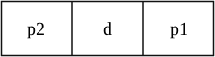
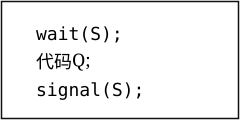
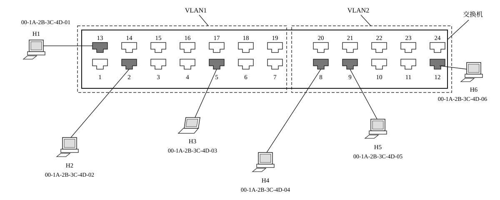
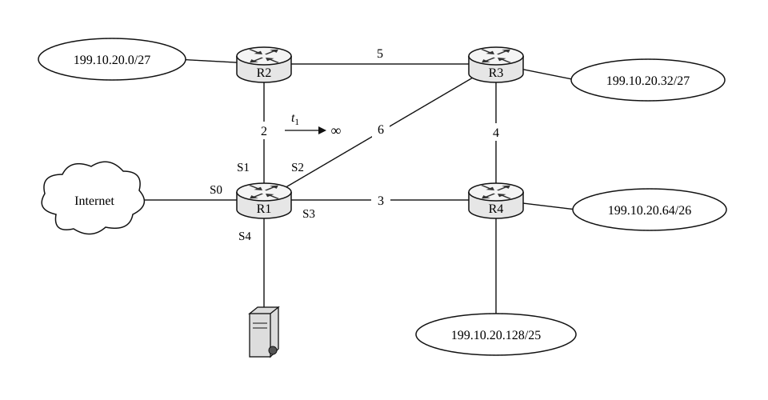
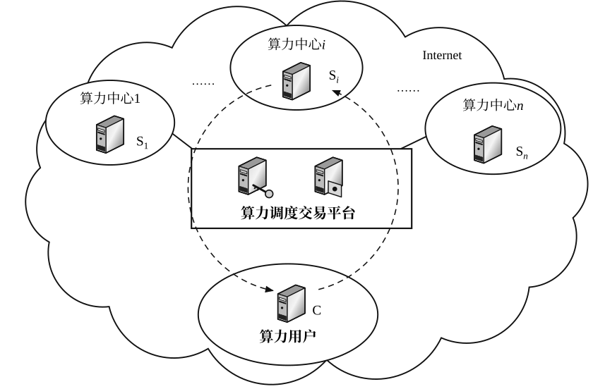

2026-01
线性表的顺序表示线性表 L 含有 n（n≥ 3）个元素，采用顺序存储方式保存。在 L 中原有元素相对次序保持不变且仍有空闲存储空间的情况下，下列操作中，一定会移动多个元素的是
I. 在表头插入一个元素
II. 在表头删除一个元素
III. 在表尾插入一个元素
IV. 在表尾删除一个元素
答案：A
本题讲解：顺序表四种头尾插删操作的元素移动量
答案：A（仅 I、II）
第一步：抓住题眼
顺序表按位序连续存储，插入或删除的代价来自「保持原有元素相对次序不变」所需的成块挪动。题干给足两个前提：n ≥ 3（保证「多个元素」有意义）、仍有空闲存储空间（插入不必考虑扩容）。于是只需判断每种操作必须挪动几个元素。
第二步：逐操作判定
| 操作 | 必须移动的元素 | 是否一定移动多个 |
|---|---|---|
| I. 表头插入 | 原有 n 个元素全部后移一格 | 是（n ≥ 3） |
| II. 表头删除 | 其余 n−1 个元素全部前移一格 | 是（n−1 ≥ 2） |
| III. 表尾插入 | 新元素直接写入第 n+1 个位置 | 否（移动 0 个） |
| IV. 表尾删除 | 表长直接减 1 即可 | 否（移动 0 个） |
规律：表头操作牵动「整张表」，表尾操作只碰最后一个位置。
第三步：对照选项
一定是 I、II 的只有 A。B 混入了表尾插入（III 不移动元素），C 全是表尾操作，D 恰好漏掉两个「一定移动」的操作，均排除。
易错点
- 漏掉删除也要移动：表头删除虽不插入新元素，但空出的首位必须由后续 n−1 个元素前移填补，II 属于「一定移动多个元素」。
- 把「仍有空闲空间」当成可以不移动：顺序表按位序存放，表头插入后原有元素的位序全部加 1，挪动与空间多少无关。
- 把「不一定」混进「一定」：题目问的是「一定会」，凡存在不移动元素的操作（III、IV）都不能选入。
一句话结论：表头插/删牵一发而动全表（I、II 一定移动多个元素），表尾插/删一步到位，答案选 A。
2026-02
线性表的链式表示已知带头结点的双向链表 L 含有 n（n≥ 3）个元素，结点结构为

其中，p2 和 p1 分别是指向其直接前驱和直接后继结点的指针，指针 head 指向头结点，指针 cu = head。现要将 L 各结点中的 p2 指针修改为指向 p1 所指结点的直接后继结点。当指针指向的结点不存在时，相应的指针值为 NULL。下列选项中，可以完成修改功能的是
答案：D
本题讲解：双向链表 p2 指针整体改链的代码判定
答案：D
第一步：把题意翻译成指针等式
结点中 p2 指向直接前驱、p1 指向直接后继。目标：对 L 的每个结点，把它的 p2 改为指向「p1 所指结点的直接后继」，即当 cu->p1 存在时执行 cu->p2 = cu->p1->p1；当 cu->p1 为 NULL（尾结点）时，p1 所指结点不存在，其直接后继也不存在，按题意 p2 应置 NULL。头结点也是 L 的结点（cu 从 head 出发），同样要处理。
第二步：找每个选项的致命点
| 选项 | 致命点 |
|---|---|
| A | 尾结点的 cu->p1 为 NULL，仍执行 cu->p1->p1，解引用空指针出错 |
| B | 循环条件要求 cu->p2 != NULL，而头结点的 p2 初值是 NULL，循环一次都不执行 |
| C | 尾结点处 cu->p1 为 NULL 时 if 不成立、cu 也不更新，死循环 |
| D | cu->p1 为 NULL 时置 cu->p2 = NULL 并让 cu 前进，处理完整条链后正常结束 |
第三步：用一条 3 结点链验证 D
设 head 指向头结点，链为 head→a1→a2→a3→NULL，cu 从 head 出发：
| cu | 判断 | 本步修改 |
|---|---|---|
| head | p1 = a1 非空 | head 的 p2 改为 a2 |
| a1 | p1 = a2 非空 | a1 的 p2 改为 a3 |
| a2 | p1 = a3 非空 | a2 的 p2 改为 NULL（a3 的 p1 是 NULL） |
| a3 | p1 = NULL | a3 的 p2 置 NULL，cu = a3 的 p1 = NULL，循环结束 |
每个结点都被正确改写，遍历沿 p1 进行、修改 p2 不影响前进路线，D 正确。
易错点
- 忽略头结点：头结点没有前驱，p2 初值是 NULL，这正是 B 选项循环条件直接失效的原因。
- 忽略尾结点：尾结点的 p1 为 NULL，是 A 崩溃、C 死循环的共同根源。
- 误以为必须单独处理倒数第二个结点：
cu->p1->p1在 cu 为倒数第二个结点时值为 NULL，直接赋值即可，D 的 if 分支天然涵盖。
一句话结论：能同时正确处理「头结点 p2 初值 NULL」与「尾结点 p1 为 NULL」的只有 D。
2026-03
二叉树的遍历和线索二叉树若二叉树 T 的中序遍历序列是 b,e,d,f,c,a,g，层序遍历序列是 a,b,g,c,d,e,f，则 T 的后序遍历序列是
答案：C
本题讲解：由中序 + 层序序列重建二叉树再求后序
答案：C（e,f,d,c,b,g,a）
第一步：层序定根，中序分左右
层序序列的第一个元素 a 是整棵树的根。在中序序列 b,e,d,f,c,a,g 中，a 左边的 b,e,d,f,c 是左子树的中序，右边的 g 是右子树的中序。
第二步：逐个子树确定根
对每棵子树，看它在层序序列中的出现位置：最先出现的那个结点就是这棵子树的根，再用中序切分它的左右子树。
| 子树（中序） | 层序中最先出现的 | 结论 |
|---|---|---|
| b,e,d,f,c | b | b 为根；b 在中序最左，无左子树，右子树中序为 e,d,f,c |
| e,d,f,c | c | c 为根；c 在中序最右，无右子树，左子树中序为 e,d,f |
| e,d,f | d | d 为根；左边 e 是左孩子，右边 f 是右孩子 |
于是整棵树为：根 a，左孩子 b（b 无左孩子，右孩子 c；c 无右孩子，左孩子 d；d 的左、右孩子分别是 e、f），右孩子 g。用两个原序列验证：中序 e,d,f,c,b 拼上 a、再拼 g 完全吻合；层序 a,b,g,c,d,e,f 也逐层吻合。
第三步：写后序序列
后序 = 左子树后序 + 右子树后序 + 根。从最深处往上：d 的后序为 e,f,d；c 的后序为 e,f,d,c；b 的后序为 e,f,d,c,b；g 的后序为 g；根 a 最后访问，得到 e,f,d,c,b,g,a。
易错点
- 想用层序切分左右：层序序列是逐层穿插的，只能用来定根；切分左右必须靠中序。
- 忽略「b 无左孩子」：若把 e,d,f,c 当作 b 的左子树处理，树形全错。
- 后序没把左子树走完就轮到右子树：正确顺序是先 e,f,d,c,b，再 g，最后 a——C 的前五项正是 e,f,d,c,b，干扰项 A、B 在 d 的两个孩子（e、f）先后顺序上做文章。
一句话结论：由「层序定根、中序分左右」重建出 a（左 b，b 右链下挂 c(d(e,f))；右 g），后序为 e,f,d,c,b,g,a，选 C。
2026-04
森林树与二叉树的应用已知由 5 棵树组成的森林 F 中各棵树所含的结点个数分别是 2，3，4，5，7。若 F 中各棵树的排列次序任意，则与 F 对应的二叉树的高度至少是
答案：B
本题讲解：森林转二叉树的最小高度
答案：B（6）
第一步：转化规则决定「深度从哪来」
森林 F 转二叉树：第一棵树的根作二叉树的根，第 j 棵树的根是第 j−1 棵树根的右孩子——5 个树根连成一条右链，第 j 棵树的根必然落在二叉树第 j 层；每棵树内部按「左孩子、右兄弟」转化，树内结点还要继续往深处挂。
第二步：先求每棵树自己的最小转化高度
设 h(n) 为 n 个结点的树转成二叉树后的最小高度。树根的第一个孩子转成根的左子树，其余孩子转成根的右链，结点分得越均衡整体越矮：
| n | 2 | 3 | 4 | 5 | 7 |
|---|---|---|---|---|---|
| h(n) 最小 | 2 | 3 | 3 | 4 | 4 |
例如 n=7：根的第一个孩子挂 4 个结点的子树（转化后高 3），第二个孩子挂 2 个结点的子树（转化后高 2），整棵转化后高 1 + max(3, 1+2) = 4。
第三步：树根右链叠加，大树排前面
第 j 棵树中最深结点落在二叉树第 j + h − 1 层。把转化高度大的树排在前面才能压低最大值，按 7,5,4,3,2 排列：
| 次序 j | 树大小 | 该树最深点所在层 |
|---|---|---|
| 1 | 7 | 1 + 4 − 1 = 4 |
| 2 | 5 | 2 + 4 − 1 = 5 |
| 3 | 4 | 3 + 3 − 1 = 5 |
| 4 | 3 | 4 + 3 − 1 = 6 |
| 5 | 2 | 5 + 2 − 1 = 6 |
最大层数为 6。又因为第 5 棵树的根永远在第 5 层（右链长度固定），而它至少含 2 个结点、内部至少再下探 1 层，任何排列高度都不可能低于 6。故高度至少是 6，选 B。
易错点
- 只算树根右链得 5：右链只确定 5 个根的层数，每棵树内部还有结点要往深挂。
- 树序随意放：小树放前面会把大树挤向更深的层，例如按 2,3,4,5,7 排列时最大层数达 7。
- 高估单棵树的转化高度：树高（如 7 结点的链形树高 7）不等于转化高度，要按「左孩子、右兄弟」重新算，本题各树的最小转化高度是 2,3,3,4,4。
一句话结论：5 个树根成右链占第 1 至 5 层，结点最多的树排前面、内部再叠一层，最小高度为 6，选 B。
2026-05
树与二叉树的应用已知二叉树 T 中 7 个叶结点 a,b,c,d,e,f,g 的权值分别是 1，2，4，5，8，10，12，当 T 的带权路径长度最小时，与结点 e 深度相同的叶结点仅有
答案：D
本题讲解：哈夫曼树中与 e 同深度的叶结点
答案：D（f、g）
第一步：构造哈夫曼树
7 个叶 a~g 的权值为 1,2,4,5,8,10,12。每轮从森林中取出两个最小的合并：
| 步 | 取出 | 合并得 | 剩余森林 |
|---|---|---|---|
| 1 | 1,2 | 3 | 3,4,5,8,10,12 |
| 2 | 3,4 | 7 | 5,7,8,10,12 |
| 3 | 5,7 | 12 | 8,10,12,12（12 是新结点，另一个 12 是叶 g） |
| 4 | 8,10 | 18 | 12,12,18 |
| 5 | 12,12 | 24 | 18,24 |
| 6 | 18,24 | 42 | 根 |
第二步：读出各叶深度
根 42 的两个孩子是 18 与 24：18 下挂叶 8、10（深度 3）；24 下挂叶 g（12）与合并结点 12（深度 3）；合并结点 12 下挂 5 与 7（深度 4）；7 下挂 3 与 4（深度 5）；3 下挂 1 与 2（深度 6）。
| 叶 | e(8) | f(10) | g(12) | d(5) | c(4) | a(1) | b(2) |
|---|---|---|---|---|---|---|---|
| 深度 | 3 | 3 | 3 | 4 | 5 | 6 | 6 |
与 e 深度相同的叶只有 f 和 g，选 D。顺便可得 WPL = 8×3 + 10×3 + 12×3 + 5×4 + 4×5 + 1×6 + 2×6 = 148。
易错点
- 被两个 12 吓住：第 5 步有两个 12（叶 g 与合并结点），无论怎么取，树的深度结构不变，与 e 同深的叶仍是 10 和 12。
- 以为权大一定更深：哈夫曼树恰恰是权大的叶更浅，8、10、12 三个大权都在最浅层。
- 只看与 e 权值相邻的叶：d(5) 与 e 权值接近但深度不同（4 层），深度由构造过程决定，不由权值差距决定。
一句话结论：最浅一层（深度 3）上挂着权 8、10、12 的三个叶 e、f、g，与 e 同深的是 f、g，选 D。
2026-06
图的存储及基本操作若用邻接表保存有向图 G=(V,E)，则计算 G 中某顶点入度的时间复杂度是
答案：D
本题讲解：邻接表上有向图顶点入度的时间复杂度
答案：D（O(max(|V|,|E|))）
第一步：邻接表存的是什么
有向图的邻接表为每个顶点挂一条边表，边表结点记录的是以该顶点为弧尾的边（出边）。于是：求出度只需数自家边表的长度；而顶点 v 的入边（以 v 为弧头的边）分散在其他所有顶点的边表里，没有任何局部信息可用。
第二步：数入度必须全局扫一遍
要统计有多少条边指向 v，只能把所有顶点的边表逐个看过去：|V| 个边表的表头都要访问（O(|V|) 项），|E| 个边结点都可能被检查（O(|E|) 项），总计 O(|V|+|E|)，即 O(max(|V|,|E|))。
第三步：排除干扰项
- O(|V|)：只够把顶点表走一遍，藏在边表里的入边没数到。
- O(min(|V|,|E|)) 与 O(|E|)：边表为空的顶点也得看一眼表头，|V| 这一项省不掉；两项都必须算，取大者。
对比记忆：逆邻接表存入边，求入度才是数自家边表；邻接矩阵求入度需扫 v 对应的一整列，O(|V|)。
一句话结论：邻接表只记出边，入度分散在别人的边表里，全部扫一遍为 O(|V|+|E|) = O(max(|V|,|E|))，选 D。
2026-07
图的应用有向图 G=(V,E) 的顶点个数为 n（n≥ 2），指定一个顶点为初始点，指定若干个顶点（非初始点）为标记点，且每个顶点都在从初始点到标记点的有向路径上（一条有向路径上允许含有多个标记点）。每条有向边上均有一个字符，从初始点到任一标记点的有向路径上的所有字符组成一个字符串，所有这样的字符串构成字符串集 S。下列关于 S 的叙述中，错误的是
答案：B
本题讲解：路径字符串集合 S 的四条性质判定
答案：B（错误的是 B）
第一步：理清 S 的来源
S 由「初始点到各标记点的有向路径」上的边字符拼接而成，字符串长度 = 该路径的边数；且题设要求每个顶点都落在某条这样的路径上。判定四个选项，就是判定路径长度的可能取值范围。
第二步：无环情形（判 A、B）
无环时任何路径都不含重复顶点：n 个顶点的路径至多 n−1 条边，字符串长度至多 n−1。于是：
- 路径条数有限，S 是有穷集，A 正确；
- 长度只能落在 1 到 n−1 之间，不存在长度等于 n 的字符串，B 的断言在边界外，错误。
第三步：有环情形（判 C、D）
有环时路径允许重复经过顶点：设环长为 r，环上任一顶点 v 由题设条件落在某条「初始点到标记点」的路径上（长 L）；在 v 处把环绕一圈再接回后半段，得到长 L+r 的路径，绕 t 圈就得 L+t·r——t 增大即可超过 n，所以存在长度大于 n 的字符串，C 正确。
另一方面，最短的「初始点到标记点」路径不含重复顶点（有重复就能截短），是简单路径，长度至多 n−1 < 2n，因此 S 中必有长度小于 2n 的字符串，D 正确。
易错点
- 把「路径长度」当成「顶点数」：长度数的是边数，n 个顶点的简单路径只有 n−1 条边，B 的「等于 n」恰好取不到。
- 以为有环时 S 只会长不会短：有环只保证能绕出长串（C 成立），最短路径仍是简单路径，小于 2n 的字符串始终存在（D 成立）。
- 漏用题设约束：正是「每个顶点都在某条路径上」保证环上顶点既可从初始点到达、又能继续走到标记点，绕环拼接才合法。
一句话结论：无环时路径长度至多 n−1（B 不可能成立）；有环时可绕环任意加长（C 对）、最短路径不超过 n−1 小于 2n（D 对），错误的是 B。
2026-08
树形查找高度为 4 的平衡二叉树中，根结点左、右子树的结点个数相差最多是
答案：D
本题讲解：高 4 的 AVL 树根的两棵子树结点数最大差
答案：D（5）
第一步：平衡约束管「高度差」，不管「结点数差」
AVL 只要求每个结点左右子树高度之差不超过 1。根的高度为 4，左、右子树的高度组合只可能是 (3,3) 或 (3,2)、(2,3)（(2,2) 等更低组合也允许，但要拉开结点数差距，必须让一侧顶到高度 3）。
第二步：两种高度下的结点数极值
高为 h 的 AVL：最少结点数 N(h) = N(h−1) + N(h−2) + 1，其中 N(1)=1、N(2)=2，故 N(3)=4；最多结点数是满二叉树的 2^h − 1，即高 3 最多 7、高 2 最多 3。
| 子树高度组合 | 一侧最多 | 另一侧最少 | 结点数最大差 |
|---|---|---|---|
| (3,3) | 7 | 4 | 3 |
| (3,2) | 7 | 2 | 5 |
| (2,2) | 3 | 2 | 1 |
第三步：验证 (3,2) 组合合法并取到最大值
左子树取高 3 的满树（7 个结点），右子树取高 2 的最少形态（根带 1 个孩子，共 2 个结点）：根的平衡因子 = 3 − 2 = 1，合法；整棵树高度 4。结点数差 7 − 2 = 5，为最大值，选 D。
易错点
- 以为高度差 ≤ 1 则结点数差也不大：高度只差 1，结点数可以差出「一整棵最少形态的树」。
- 记错 N(2)：高 2 的 AVL 最少是 2 个结点（根 + 1 个孩子），不是 3（3 是满树）。
- 漏掉异高组合：同为高 3 时差最多 7 − 4 = 3；最大差 5 出现在 (3,2) 组合。
一句话结论：左子树满 7 个、右子树最少 2 个，高度差 1 合法，结点数差最大为 5，选 D。
2026-09
插入排序使用直接插入排序算法分别对下列数据进行升序排序，元素之间比较次数最少的是
答案：B
本题讲解：谁让直接插入排序的比较次数最少
答案：B
第一步：比较次数由逆序决定
直接插入排序每一趟把第 i 个元素插入前面的有序区（从后往前比较）：遇到比它大的元素就比较一次并后移，最后与第一个不大于它的元素（或哨兵）比较一次而停。所以第 i 趟比较次数 = 前面比它大的元素个数 + 1，总比较次数 = (n−1) + 逆序对数。序列越接近升序，比较次数越少。
第二步：逐选项数比较次数
| 选项 | 各趟比较次数 | 总计 |
|---|---|---|
| A 30,27,56,41,80,95,69 | 2,1,2,1,1,3 | 10 |
| B 31,43,26,55,63,99,77 | 1,3,1,1,1,2 | 9 |
| C 61,84,51,23,34,91,40 | 1,3,4,4,1,5 | 18 |
| D 93,32,48,81,50,21,72 | 2,2,1,3,6,3 | 17 |
以 B 为例：43、55、63、99 各只需 1 次（前驱都不大于它，一比即停）；26 要越过 43、31 两个更大的再加最后一次共 3 次；77 越过 99 共 2 次。A 中只有 27、41、69 三处逆序，D 中 21 一趟就要越过前面全部 5 个元素。
第三步：结论
B 的逆序对最少（只有 31 大于 26、99 大于 77 两处），总比较次数 9 次最少，选 B。
易错点
- 逆序对重复计数：每趟比较次数由「该元素之前比它大的元素个数」决定，一对逆序只在处理后面那个元素时贡献一次。
- 以为前面几个元素有序就够：C 的 61,84 有序，但 51、23、34 连续大量逆序，总数被拉到 18 次。
- 漏掉每趟最后一次比较：与「第一个不大于它的元素」的那次成功比较也计入；各选项口径一致，不影响 B 最少的结论。
一句话结论：总比较次数 = (n−1) + 逆序对数，B 逆序最少（9 次），选 B。
2026-10
各种内部排序算法的比较及应用某考试考查了课程 C1 和 C2，C1、C2 成绩及总成绩（C1、C2 成绩之和）均保存在数组 M 中。现需根据考生的总成绩从高到低进行排名，总成绩相同者的排名由 C1 成绩从高到低决定，C1 成绩也相同者的排名由初始相对次序决定。假设先按 C1 成绩对 M 排序，再按总成绩对 M 排序，能得到正确的排名结果，则下列算法中，采用的是
答案：A
本题讲解：多关键字排序为何必须选稳定的算法
答案：A（基数排序）
第一步：拆解排名规则
最终次序要求三层：主关键字总成绩从高到低；总成绩相同时按 C1 从高到低；C1 也相同时保持初始相对次序。题目规定的做法是先按 C1 排序、再按总成绩排序。
第二步：两趟排序如何逐级传递次序
第二趟按总成绩排序时，总成绩相同的记录之间的先后只能由第二趟原样保留——保留下来的正是第一趟之后它们按 C1 排好的次序。于是：
- 第二趟必须稳定，才能保住「同总分者按 C1 从高到低」；
- 第一趟也必须稳定，才能在 C1 相同时保住「初始相对次序」。
第三步：四个选项谁稳定
| 算法 | 稳定性 | 能否满足 |
|---|---|---|
| 基数排序 | 稳定（逐趟分配-收集，桶内保持进入次序） | 能 |
| 快速排序 | 不稳定（交换可跨越很远） | 否 |
| 希尔排序 | 不稳定（分组插入打乱相对次序） | 否 |
| 简单选择排序 | 不稳定（远距离交换） | 否 |
只有基数排序能保证两趟都稳定，选 A。这正是多关键字排序「低位优先、各趟必须稳定」思想的应用。
易错点
- 只想按总分排一次：题目限定先按 C1 再按总分，考查的就是趟与趟之间的次序传递。
- 以为第二趟稳定就够：第一趟不稳定时，C1 相同者的初始次序在第一趟就被打乱，第二趟无法恢复。
- 误记选择排序稳定：例如序列 2a,2b,1 选最小元素 1 与 2a 交换后，两个 2 的相对次序颠倒。
一句话结论：两趟排序都必须稳定才能逐级继承次序，选项中只有基数排序稳定，选 A。
2026-11
外部排序采用 k-路归并对外存中保存的数据进行排序，排序的趟数记为 d。下列叙述中，正确的是
I. 增大 k 的值可能减小 d 的值
II. 初始归并段的个数不影响 d 的值
III. 可用内存大小限制了初始归并段的最大长度
答案：A
本题讲解：k 路归并趟数 d 的影响因素
答案：A（仅 I 正确）
第一步：写出趟数公式
设初始归并段有 r 个，k 路归并一趟最多把段数缩小为原来的 1/k（向上取整），从 r 个段归并到 1 个段所需的趟数 d = ⌈log_k r⌉。d 只由 k 和 r 两个量决定。
第二步：逐条判定
| 叙述 | 判定 | 理由 |
|---|---|---|
| I. 增大 k 可能减小 d | 正确 | k 越大对数越小，如 r=100：k=10 时 d=2，k=4 时 d=4，k=25 时 d=2 |
| II. 初始归并段个数不影响 d | 错误 | d 随 r 增大而增大，r 正是公式中的自变量 |
| III. 可用内存大小限制了初始归并段的最大长度 | 错误 | 用置换-选择排序生成初始归并段时，边输出边从输入文件换入记录，段长可以超过内存工作区容量（平均约为其 2 倍），内存大小并不构成对段长的硬性上限 |
注意 I 的措辞是「可能」：增大 k 不一定改变 d（如 r=8 时 k 从 2 增到 4，d 都是 3），但确实可能减小，叙述本身正确。
第三步：结论
只有 I 正确，选 A。
易错点
- 凭直觉认为 III 对：「内存装不下就生成不了长段」只适用于用普通内部排序生成初始归并段；置换-选择排序利用归并段输出腾出的空间换入新记录，段长不受内存限制。
- 把趟数公式记成与 r 无关：没有 r 就无从谈起归并到 1 个段需要几趟。
- 忽略 I 的「可能」二字：把「可能减小」误解为「必然减小」再去找反例否定它，就丢分了。
一句话结论：d = ⌈log_k r⌉，增大 k 可能使 d 减小（I 对），r 决定 d（II 错），置换-选择排序使段长不受内存限制（III 错），选 A。2026-12
计算机系统层次结构下列关于计算机系统层次结构的叙述中，错误的是
答案：C
本题讲解：计算机系统层次结构中"谁在哪一层"
第一步：先摆出标准的层次结构
自上而下依次是：应用软件层 → 语言处理程序/操作系统层 → 指令集体系结构（ISA）层 → 计算机组成（微架构）层 → 数字逻辑层 → 器件及物理封装层。ISA 是软件与硬件之间的接口，向上屏蔽实现细节，向下规定"机器"必须完成什么。
第二步：逐项核对四个选项
| 选项 | 说法 | 判断 |
|---|---|---|
| A | 最上层是应用软件层，最下层是器件及物理封装层 | 对：层次结构的两个极端 |
| B | ISA 是软件和硬件的接口，且必不可少 | 对：没有 ISA，软件无从在硬件上运行 |
| C | 计算机组成（微架构）属于 ISA 的"物理实现层" | 错 |
| D | 操作系统通过 ISA 进行抽象、向上层提供服务 | 对：OS 用特权指令等 ISA 机制实现进程、虚存等抽象 |
C 的错处：计算机组成（微架构）是 ISA 之下独立的逻辑设计层，它决定用怎样的数据通路和控制器去组织实现；而"物理实现层"指的是其下的数字逻辑层与最底层的器件及物理封装层。把微架构说成 ISA 的物理实现层，混淆了这两个层次。
易错点
- 把"微架构实现了 ISA"等价成"物理实现层"：实现 ≠ 物理实现，微架构与器件封装之间还隔着逻辑层，对应干扰项 C。
- 忽略层次的两端：最上层是应用软件、最下层是器件及物理封装，A 的说法正是对的。
- 小看操作系统的地位：OS 恰是靠 ISA 提供的机制向上抽象，D 是对的。
答案：C。记忆锚点：编程可见、软硬界面归 ISA；微架构是 ISA 之下的逻辑实现层，不是物理实现层。
2026-13
运算方法和运算电路对机器数 1010 0110B 先算术右移 3 位，再算术左移 2 位，最终结果是
答案：A
本题讲解：补码算术移位的规则与执行顺序
答案：A（1101 0000B）
第一步：先立机制——移位改变位权，"补什么"决定数值语义
8 位补码是模 256 下的记数方式：最高位代表 −128，其余位按权相加。算术移位每移一位，所有位的权就放大或缩小一档，于是：
- 算术右移 1 位 = 除以 2，向负无穷取整。为什么高位必须补符号位？负数之所以为负，全靠最高位那个 −128 权重上的 1；右移后这个 1 退到权 −64 的位置，新腾出的最高位必须再补一个 1，位串才仍落在"最高位为 1"的负数区，数值上恰好实现 ⌊x/2⌋。若补 0，位串就跳进无符号解释的正数区，数值面目全非——这正是算术移位与逻辑移位的分界线。
- 算术左移 1 位 = 乘以 2（模 256）：低位一律补 0；只要真值仍在 −128~+127 范围内就不溢出。
第二步：按题干顺序推演
初始 1010 0110 = −128 + 32 + 4 + 2 = −90。
右移 3 位（每次最高位补 1）：
| 操作 | 位串 | 真值核对（÷2 向负无穷取整） |
|---|---|---|
| 右移 1 位 | 1101 0011 | −90 ÷ 2 = −45 |
| 右移 2 位 | 1110 1001 | ⌊−45 ÷ 2⌋ = −23 |
| 右移 3 位 | 1111 0100 | ⌊−23 ÷ 2⌋ = −12 |
左移 2 位（低位补 0；−12 × 4 = −48 未超范围，不溢出）：
| 操作 | 位串 | 真值核对（×2） |
|---|---|---|
| 左移 1 位 | 1110 1000 | −24 |
| 左移 2 位 | 1101 0000 | −48 |
最终结果 1101 0000B，选 A。
易错点
- 负数右移补 0：那是逻辑移位的规则；对负补码补 0 等于把它当无符号数截断，得不到"除 2"的语义。
- 左移把符号位顶出去：算术左移符号位不动、低位补 0；本题 −48 在范围内故安全，一旦真值超范围即溢出。
- 调换操作顺序：先左移 2 位时 −90 × 2 = −180 早已溢出（1010 0110 → 0100 1100，符号丢失），再右移 3 位得 1111 0011（−13），与题干顺序的 −48 完全不同——右移带取整、不可逆，移位顺序不可交换。
记忆锚点：算术右移 = 除 2 向负无穷取整、高位补符号位；算术左移 = ×2、低位补 0；符号位始终不动。
2026-14
浮点数的表示与运算已知 float 型变量用 IEEE 754 单精度浮点格式表示，采用就近舍入（中间值取偶数）方式。若 float 型变量 x 值为 12.1（提示：0.1 = 0.000 1100 1100 1100 1100 1100⋯B），则 x 的机器数是
答案：B
本题讲解：float 型 12.1 的 IEEE 754 单精度编码（含就近舍入）
第一步：化二进制并规格化
12 = 1100B；0.1 = 0.0001 1001 1001 1001⋯B（1100 循环），所以 12.1 = 1100.000110011001100⋯B = 1.100 0000 1100 1100 1100 1100 11⋯B × 2 的 3 次幂。
第二步：定阶码与 23 位尾数
符号位 0；阶码 = 3 + 127 = 130 = 1000 0010B；取小数点后 23 位尾数：1000 0011 0011 0011 0011 001。
第三步：就近舍入（中间值取偶）
被舍弃部分从第 24 位起是 1100 11⋯，即保护位 G=1、舍入位 R=0、粘位 S=1（后面还有 1，S=1）。
| 情形 | 处理 |
|---|---|
| G=1 且 R、S 不全为 0 | 被舍部分大于一半，尾数末位加 1 |
| G=1 且 R=S=0 | 恰为一半，尾数末位取偶 |
本题为前者：1000 0011 0011 0011 0011 001 + 1 = 1000 0011 0011 0011 0011 010。
第四步：拼接机器数
0 | 1000 0010 | 1000 0011 0011 0011 0011 010 → 0100 0001 0100 0001 1001 1001 1001 1010B = 4141 999AH，选 B。
易错点
- 直接截断不舍入：得到 4141 9999H，正是干扰项 A。
- 忘加偏置 127：把阶码写成 3 本身或 130 以外的数。
- 以为 R=0 就"四舍"：G=1 且 S=1 说明被舍部分严格大于一半，必须进位，与"中间值取偶"无关。
记忆锚点：单精度 = 1 + 8 + 23，阶码偏置 127；G=1 且 R、S 不全为 0 就进位。
2026-15
主存储器若用 8 个 64M× 8 位的 DRAM 芯片按交叉编址方式构成主存储器，并与一个宽度为 64 位的存储器总线相连，主存每次最多读写 64 位，且按字节编址，则下列地址中，与主存地址 0018 001DH 位于同一芯片中的是
答案：A
本题讲解：交叉编址存储器中"地址属于哪个芯片"
第一步：确定芯片划分规则
8 个 64M × 8 位 的 DRAM 芯片按交叉编址连接 64 位总线：每个芯片宽 8 位 = 1 字节，相邻地址轮流分布在不同芯片上，一次访存可并行读写 8 个芯片各 1 字节、拼成 64 位。因此芯片号 = 主存地址 mod 8，即地址二进制最低 3 位。
第二步：算出目标地址的芯片号
目标地址 0018 001DH 的末字节 1DH = 0001 1101B，低 3 位 101 = 5 → 位于 5 号芯片。
第三步：逐一验证选项（只看低 3 位）
| 选项 | 地址 | 低 3 位 | 芯片号 | 与目标同芯片 |
|---|---|---|---|---|
| A | 0000 01D5H | 101 | 5 | 是 |
| B | 000F A020H | 000 | 0 | 否 |
| C | 0018 001EH | 110 | 6 | 否 |
| D | 0F02 0014H | 100 | 4 | 否 |
选 A。
易错点
- 按高位分芯片：那是顺序编址的规则；交叉编址恰恰相反，看最低位，对应 B、C、D 的误判。
- 把 64M 当成"每片 64MB 才轮转"：64M 是每片的单元数，轮转周期只由芯片个数 8 决定。
- 忽略"按字节编址"：正因为按字节编址、每片 8 位，才有"芯片号 = 地址 mod 8"这一口算结论。
记忆锚点：交叉编址 → 芯片号 = 地址 mod 芯片数，只看最低几位。
2026-16
指令系统对于下列选项中给出的相关内容，不是由指令集体系结构规定的是
答案：D
本题讲解：哪些内容由指令集体系结构（ISA）规定
第一步：抓住 ISA 的边界
ISA 规定的是软件编程可见的一切：指令格式与操作类型（含有无输入/输出指令）、寻址方式、数据类型与寄存器组织、异常与中断的响应机制及服务入口获取方式（向量中断/非向量中断）、虚拟存储的地址转换机制（段式/页式）等。至于流水线如何划分、是否采用超级流水线、发射宽度多大，属于微架构实现技术，编程不可见，ISA 不作规定。
第二步：逐项判断
| 选项 | 内容 | 是否 ISA 规定 |
|---|---|---|
| A | 指令集中是否包含输入和输出指令 | 是：指令集合的组成，直接决定 I/O 的编程方式 |
| B | 采用向量中断还是非向量中断 | 是：决定服务程序入口地址的获取方式，是软硬件界面 |
| C | 采用段式还是页式虚拟存储管理 | 是：地址转换与保护机制编程可见（如页表结构） |
| D | 指令流水线是否采用超级流水线技术 | 否：微架构实现细节 |
选 D。
易错点
- 把中断、虚存当"纯硬件细节"：向量中断改变入口获取方式，页/段式改变地址翻译，都改变软件可见行为，ISA 必须规定，对应干扰项 B、C。
- 把一切"实现技术"塞进 ISA：超级流水线、超标量、乱序执行等只影响性能，同一 ISA 可有多种实现。
记忆锚点：编程看得见的归 ISA，看不见的归微架构（计算机组成）。
2026-17
指令系统异常和中断机制下列指令中，执行后有可能按存放顺序执行其下一条指令的是
I. 条件跳转指令
II. 过程调用指令
III. 陷阱（Trap）指令
IV. 过程返回指令
答案：A
本题讲解：哪些控制类指令"有可能"顺序执行下一条
第一步：理解题意
"执行后有可能按存放顺序执行其下一条指令" = 该指令执行结束后，紧接着被执行的指令可能是紧随其后存放的那一条，即不保证跳转、但也存在顺序执行的情形。
第二步：逐条分析
- 条件跳转（I）：条件不成立时转移不发生，PC 顺序指向下一条 → 可能。
- 过程调用（II）：转移目标由指令地址码给出，是编码时确定的任意入口，并非硬件固定的位置；当目标恰好紧邻其后时即顺序执行下一条（调用返回时回到的也正是调用指令的下一条）→ 可能。
- 陷阱（Trap）指令（III）：执行后固定转向由硬件（异常向量）确定的处理程序入口，绝不会顺序执行下一条 → 不可能。
- 过程返回指令（IV）：执行后固定转向栈/寄存器中保存的返回地址，那是"调用指令"的下一条而非"返回指令"自己的下一条 → 不可能。
仅 I、II 有可能，选 A。
易错点
- 以为返回指令也可能顺序执行：它的落点由保存的返回地址决定，永远是"别的位置"。
- 把陷阱当成普通跳转：陷阱入口由硬件向量决定，与指令给出的地址码无关。
- 混淆"最终会执行到下一条"与"执行后立即执行下一条"：题意指前者之外的紧邻执行情形。
记忆锚点：目标由指令码"自由指定"才存在顺序执行的可能；由硬件向量或栈中返回地址固定的必转移。
2026-18
高速缓冲存储器某计算机按字节编址，数据 Cache 共有 1024 行，采用 4 路组相联映射方式，主存块大小为 32 B。若需要访问主存地址为 1028 的 4 字节数据，则该数据所在主存块对应的 Cache 组号是
答案：C
本题讲解：主存块映射到哪个 Cache 组
答案：C（组号 32）
第一步：先立模型——组相联把 Cache 分组，主存块按块号循环入组
组相联是直接映射与全相联的折中：把 Cache 的行分成若干组，主存块不限定到某一行、只限定到某一个组，规则是组号 = 主存块号 mod 组数。为什么用块号取模？因为主存块按顺序连续编号，"mod 组数"正是把它们循环均分到各组的办法——效果上等于取块号二进制的低位作组号；至于块最终落在组内哪一行，由替换算法在组内 4 行里挑、硬件靠 tag 比对确认，与算组号无关。所以动手顺序不是拿地址直接运算，而是先把地址两层拆开：按块大小切出块号，再对块号取模得组号。
第二步：三步计算
- 组数 = 1024 行 ÷ 4 路 = 256 组（组号 0~255，每组 4 行）。
- 主存块号：按字节编址、块大小 32 B，地址 1028 所在块 = 1028 div 32 = 32（块内偏移 1028 mod 32 = 4，不参与映射）。
- 组号 = 32 mod 256 = 32，选 C。
用地址拆分视角验算：1028 = 0000 0100 0000 0100B，低 5 位是块内偏移，其后 8 位（2⁸ = 256 组）是组号字段——1028 右移 5 位得 32，低 8 位仍是 32，两条路一致。
易错点
- 拿地址直接 mod 组数 → 1028 mod 256 = 16（干扰项 B）：地址 ≠ 块号，组号字段在地址的"块号"段而不在最低位段，必须先除以块大小。
- 拿块内偏移当组号 → 1028 mod 32 = 4（干扰项 A）：偏移只负责块内定位，与块到组的映射无关。
- 块大小看错成 16 B → 块号变 64（干扰项 D）。
- 忘除以路数：把 1024 行当成 1024 组——本题 32 mod 1024 恰好也是 32，碰对答案但模型已错，换个块号就露馅。
记忆锚点：组相联 = 组间按"块号 mod 组数"循环入组 + 组内全相联；先除块大小得块号，再 mod 组数得组号。
2026-19
虚拟存储器某计算机按字节编址，虚拟地址为 16 位，页大小为 256 B，页表项中包含装入位（P）、页框号（PPN）等字段，TLB 采用 4 路组相联映射方式，共有 16 个 TLB 表项，TLB 表项中包含标记（Tag）、有效位（V）等字段。在 TLB 表项与主存页表同步后，若主存页表中页号 22 对应的页表项中 P = 0、PPN = 2AH，则下列选项中，不可能出现在组号为 2 的 TLB 表项中的是
答案：A
本题讲解：TLB 组号定位与表项合法性判断
第一步：算出 TLB 结构参数
虚拟地址 16 位、页大小 256 B → 虚页号 8 位、页内偏移 8 位。TLB 共 16 个表项、4 路组相联 → 4 组；表项所在组号 = 虚页号 mod 4，即虚页号低 2 位。
第二步：定位页 22 的表项
页号 22 = 0001 0110B，低 2 位 10 → 组 2。主存页表中页 22 的 P=0（未装入）、PPN=2AH，同步后组 2 中页 22 的表项应为 Tag=16H、V=0、PPN=2AH——这正是选项 C，可能出现。
第三步：逐项核对"能否出现在组 2"
| 选项 | Tag | 对应页号 | 页号 mod 4 | 判断 |
|---|---|---|---|---|
| A | 05H | 5 | 1 | 应在组 1，不可能在组 2 |
| B | 06H | 6 | 2 | 可能：V=1、PPN=2AH 是已装入页的合理内容 |
| C | 16H | 22 | 2 | 可能：V=0 与 P=0 同步一致 |
| D | 1AH | 26 | 2 | 可能：V=0 时 PPN 字段是残留值，1CH 无妨 |
选 A。
易错点
- 把 16 项当 16 组：4 路组相联下只有 4 组，组号只看虚页号低 2 位。
- 认为 V=0 时表项内容必须"清零"：有效位为 0 只表示映射无效，Tag、PPN 等字段可以是残留值。
- 忘了 Tag 决定归属：表项属于哪个组由其 Tag（虚页号）低 2 位决定，与 V、PPN 取值无关。
记忆锚点：Tag 定位置，V 定有效性，PPN 只是数据字段；组号 = 虚页号 mod 组数。
2026-20
数据通路的功能和基本结构指令流水线在不考虑异常/中断处理和访存额外开销的前提下，下列关于数据通路结构与 CPI 之间关系的叙述中，正确的是
I. 单周期数据通路计算机的 CPI 等于 1
II. 多周期数据通路计算机的 CPI 大于 1
III. 流水线数据通路计算机的 CPI 等于 1
答案：A
本题讲解：三种数据通路结构与 CPI 的关系
第一步：明确 CPI 的含义与题目前提
CPI = 执行一条指令所需的平均时钟周期数。题目前提是"不考虑异常/中断处理和访存额外开销"——注意它没有排除数据相关、控制相关等冒险。
第二步：逐条判断
- I：单周期数据通路 CPI = 1，对。一条指令在一个（较长的）时钟周期内取指、执行、写回全部完成，每条指令恰好占 1 个周期。
- II：多周期数据通路 CPI > 1，对。一条指令被拆成多个周期逐段完成（如取指、译码、执行、访存、写回各占一拍），CPI 显然大于 1。
- III：流水线数据通路 CPI = 1，错。理想流水线确实每拍流出一条，但存在数据相关、控制相关时必须插入气泡暂停，此时 CPI = 1 + 暂停拍数 ÷ 指令数 > 1。题目前提未排除冒险，不能断言"等于 1"。
仅 I、II 正确，选 A。
易错点
- 套用"理想流水线 CPI=1"而无视冒险：题目只排除了异常和访存开销，没排除相关暂停，这正是干扰项 III 设下的陷阱。
- 把多周期说成 CPI=1：多周期是"一条指令占多拍"，与流水线"多指令重叠"是两回事。
- 以为单周期 CPI 也"大于 1"：单周期一个周期跑完一条，CPI 恰为 1，只是周期长、主频低。
记忆锚点：单周期 =1，多周期 >1，流水线 = 1 + 冒险暂停，通常大于 1。
2026-21
指令系统I/O方式I/O 子系统中，由驱动程序和中断服务程序直接控制外设与主机之间的输入/输出操作，其中需要用到一些特权指令。下列指令中，不属于特权指令的是
答案：D
本题讲解：哪些指令属于特权指令
第一步：特权指令的判别标准
特权指令只能在内核态（管态）执行，用于直接控制硬件资源或改变系统状态：I/O 指令、关中断/开中断、中断返回（改变处理机状态并恢复内核现场）等都在其列。用户程序想用这些能力，必须通过系统调用陷入内核，由操作系统代劳。
第二步：逐项判断
| 选项 | 指令 | 是否特权 | 理由 |
|---|---|---|---|
| A | I/O 指令 | 是 | 直接启动、控制外设 |
| B | 关中断指令 | 是 | 改变中断允许状态 |
| C | 中断返回指令 | 是 | 恢复系统态现场、改变处理机状态 |
| D | 系统调用指令 | 否 | 用户态可执行 |
系统调用指令本身在用户态执行：它只是一条触发"用户态 → 内核态"陷入的指令，为用户提供请求内核服务的入口；真正的 I/O 操作由内核中的系统调用处理程序（其中才会用到特权指令）完成。因此它不属于特权指令，选 D。
易错点
- 把"系统调用"与"特权操作"混为一谈：系统调用是用户程序进入特权领域的"门"，敲门这个动作本身不需要特权。
- 认为中断返回在用户态也能执行：它改变处理机状态，必须是特权指令。
- 以为驱动程序用的指令全是特权指令：题目问的是"下列指令中不属于特权指令的是"，逐项看，别被题干情境带偏。
记忆锚点：能改变机器状态（启停外设、动中断、换态返回）的是特权指令；"请求服务"的陷入指令不是。
2026-22
异常和中断机制I/O方式中断控制 I/O 方式下，实现 I/O 需要硬件和软件协同完成。中断响应及处理过程所包含的下列工作中，必须由硬件完成的是
答案：C
本题讲解：中断响应与处理中"必须由硬件完成"的工作
第一步：分清硬件与软件的分工
中断响应阶段的工作由硬件（中断隐指令，指令周期内自动插入）完成：关中断、保存断点（PC）、引出中断服务程序入口。进入服务程序后的工作由软件完成：保存通用寄存器等现场、执行开中断、（软件轮询方式下的）中断判优、具体 I/O 处理与恢复现场等。
第二步：逐项判断
| 选项 | 工作 | 由谁完成 | 说明 |
|---|---|---|---|
| A | 开中断 | 软件 | 服务程序中执行开中断指令（时机由软件决定） |
| B | 中断判优 | 不必硬件 | 可硬件链式判优，也可软件轮询，非"必须硬件" |
| C | 保存断点 | 硬件 | 中断隐指令自动保存 PC，软件来不及参与 |
| D | 保存通用寄存器 | 软件 | 服务程序按需压栈/换区保存 |
"必须由硬件完成"的只有保存断点，选 C。
易错点
- 把判优当成"必须硬件"：轮询式软件判优也是合法方案，B 不是"必须"。
- 混淆保存断点与保存现场：断点（PC）由硬件在中断隐指令中自动保存；通用寄存器现场由服务程序（软件）保存。
- 以为开中断由硬件自动做：中断响应时硬件自动做的是关中断，开中断要等服务程序显式执行。
记忆锚点：中断隐指令三件事——关中断、存断点、取服务入口，全由硬件；其余都是软件。
2026-23
操作系统的运行环境下列程序中，在内核模式执行的是
答案：C
本题讲解：哪些系统程序运行在内核模式
答案：C（装入程序）。判断依据只有一条：程序的执行是否必须使用特权指令——涉及内存分配、建立地址映射、操作设备等系统资源的程序只能在内核模式执行。
第一步：给四个程序分类
| 程序 | 职责 | 是否需要特权指令 |
|---|---|---|
| 编译程序 | 把高级语言源程序翻译成目标代码 | 不需要，纯软件计算 |
| 链接程序 | 把多个目标模块拼接、重定位成装入模块 | 不需要，纯软件加工 |
| 装入程序 | 把装入模块装入内存，分配内存、建立地址映射 | 需要 |
| 命令解释程序 | 解释执行用户输入的命令（如 Unix 的 shell） | 不需要，它本身是一个用户进程 |
第二步：为什么装入程序必须在内核模式
装入程序要把程序装入内存并为它建立运行环境：分配内存空间、建立页表等地址映射结构。分配内存、修改页表都必须使用特权指令，用户模式下执行会触发非法指令异常，所以装入程序必须在内核模式执行（现代系统中由 exec 系统调用进入内核完成装入）。
第三步：为什么其他三项不对
- 编译程序、链接程序：只是对用户提交的源程序/目标文件做加工，不碰任何系统资源，作为普通用户程序运行即可。
- 命令解释程序：容易被误认为是"系统的心脏"。但在 Unix/Linux 中 shell 就是一个用户态进程，它解释命令、创建子进程，需要内核服务时通过系统调用进入内核，自身并不在内核模式。
易错点
- 以为"系统程序=内核模式"：编译、链接、命令解释都是系统软件，却都在用户态运行；区分标准是"是否使用特权指令"，不是"是不是系统自带的"。
- 以为装入就是"复制文件"：装入伴随内存分配与地址映射的建立，这正是它需要内核特权的原因。
结论：需要特权指令的装入程序在内核模式执行，选 C。
2026-24
虚拟内存管理操作系统的运行环境下列是支持虚拟存储管理的系统中指令执行过程的相关叙述，其中正确的是
答案：D
本题讲解：指令执行过程中硬件与操作系统的分工
答案：D（CPU 产生的异常由操作系统处理）。本题考点是"一条指令从取指到得到数据"的过程中，哪些环节由硬件（CPU/MMU）完成，哪些环节由操作系统完成。
第一步：看一条指令的执行过程
以一条访存指令为例：CPU 取指、译码并执行（这几步由 CPU 硬件完成，同时硬件检查操作码是否合法）；执行中算出虚拟地址后，由 MMU 硬件查页表完成虚实地址转换，并按页表项中的权限位检查本次访问是否越权；若发现缺页、越权、非法指令等问题，CPU 产生异常，硬件自动切换到内核模式，转去执行操作系统的异常处理程序。
第二步：逐项判断
- A 虚实地址转换由操作系统完成——错。逐条指令都要做地址转换，若交给操作系统用软件完成，开销不可接受。转换由硬件 MMU 完成，操作系统只负责在缺页时把缺失的页面调入。
- B 存储访问权限由操作系统检测——错。权限位（读写、内核/用户等）存放在页表项中，由 MMU 硬件在每次访存时检查；检测出违规后才产生异常交给操作系统处理。
- C 指令的合法性由操作系统验证——错。非法操作码、特权指令在用户态使用等问题由 CPU 在取指/译码/执行时由硬件发现并产生异常，操作系统不做逐条指令的合法性验证。
- D CPU 产生的异常由操作系统处理——对。异常是 CPU 执行指令过程中产生的，硬件只负责"发现并切换到内核模式"，后续处理（缺页调入、终止进程等）必须由操作系统的异常处理程序完成。
易错点
- 把"检测"和"处理"混为一谈：硬件负责高速的检测与转换，操作系统负责异常后的处理与善后。
- 以为操作系统包办指令执行的一切：操作系统的介入点在"产生异常之后"，而不是每条指令的执行过程之中。
结论：硬件完成地址转换与权限/合法性检测，异常的处理才是操作系统的职责，选 D。
2026-25
进程与线程简介下列关于线程的叙述中，正确的是
答案：D
本题讲解：用户级线程、内核级线程与线程共享资源
答案：D（同一进程的不同线程共享该进程虚拟地址空间中的堆）。本题考两组事实：线程由谁创建、线程之间什么私有什么共享。
第一步：线程由谁创建
- 内核级线程：在内核中实现，由操作系统创建、调度和管理，内核能看到它们。
- 用户级线程：由用户程序通过线程库（如早期的 POSIX 线程库）在用户态创建和管理，操作系统根本不知道它的存在。所以 A 错——"均由操作系统创建"不成立。
- 映射关系是"多个用户级线程 → 一个或少量内核级线程"（多对一、多对多模型）。反方向不成立：一个用户级线程某一时刻只能运行在某个内核级线程之上，不能同时映射到多个内核级线程，所以 B 错。
第二步：线程间什么私有、什么共享
同一进程内的所有线程共享进程的：虚拟地址空间（代码段、数据段、堆）、全局变量、打开的文件等；每个线程私有：自己的栈、寄存器现场（程序计数器等）和线程控制块。
- C 错：每个内核级线程被调度进入内核时都需要自己独立的内核栈（保存中断现场、内核函数调用链），同一进程的不同内核级线程内核栈互不相同，不能共用。
- D 对：堆属于进程虚拟地址空间，同一进程的不同线程天然共享（这正是 malloc 分配的内存可被同进程各线程访问的原因）。
易错点
- "多对多"记反：是多个用户线程映射到少量内核线程，不是"一个用户线程映射到多个内核线程"。
- 以为同进程的线程共用内核栈：内核栈属于内核级线程私有，与用户栈、寄存器一样是线程私有的。
- 把"共享地址空间"与"共享一切"混淆：栈和寄存器现场始终是线程私有的。
结论：用户级线程由线程库创建、内核栈线程私有、堆由同进程线程共享，选 D。
2026-26
同步与互斥某系统中有 8 个进程均会执行如右图所示的代码片段，其中信号量 S 的初值为 5。若某时刻 S 的值为 -2，已执行到代码 Q 中的进程有 m 个，因执行 wait(S) 而被阻塞的进程有 n 个，则 m 和 n 的值分别是

答案：A
本题讲解：信号量值为负时的进程计数
答案：A（m=5，n=2）。8 个进程都执行代码片段「wait(S) → 代码Q → signal(S)」，S 初值 5。用两条性质：S 为负时，其绝对值 = 因执行 wait(S) 被阻塞的进程数；每执行一次 wait(S)（无论通过还是阻塞）S 都减 1。
第一步：先数被阻塞的进程 n
某时刻 S = -2 < 0，其绝对值就是挂在该信号量等待队列上的进程数，所以 n = 2。
第二步：数已执行到代码 Q 的进程 m
从 S=5 递减到 S=-2，共减少了 5-(-2)=7，即已有 7 个进程执行过 wait(S)：
| 执行次序 | 第 1~5 次 | 第 6、7 次 |
|---|---|---|
| wait 时 S 的变化 | 5→4→3→2→1→0 | 0→-1→-2 |
| 结果 | S ≥ 0，均通过，进入代码Q | S < 0，均被阻塞 |
通过 wait 进入代码 Q 的进程 = 7 - 2 = m = 5 个；第 8 个进程尚未执行 wait，不计入任何一方。
第三步：排除干扰项
| 选项 | m、n | 错因 |
|---|---|---|
| A | 5、2 | ✓ 正确 |
| B | 5、3 | 把 n 算成 3（如误按"S 的绝对值再加 1"计算） |
| C | 6、2 | 把尚未执行 wait 的第 8 个进程也算进了 m |
| D | 7、1 | 把"执行过 wait 的 7 个"误当成 m |
易错点
- 把 S=-2 读成阻塞 3 个：S 的绝对值本身就是阻塞数，n=2。
- 把 m 数成 7：7 是"执行过 wait(S) 的进程数"，其中 2 个被阻塞在 wait 上，根本没执行到代码 Q。
- 忘了还有第 8 个进程：它没执行 wait(S)，既不是"通过"也不是"阻塞"。
结论：m=5，n=2，选 A。
2026-27
同步与互斥若进程 P 读、写数据的集合分别记为 R(P) 和 W(P)，进程 Q 读、写数据的集合分别记为 R(Q) 和 W(Q)，则进程 P 和 Q 并发执行时不会发生并发错误的充要条件是
I. W(P)∩W(Q)=∅
II. R(P)∩W(Q)=∅
III. W(P)∩R(Q)=∅
IV. R(P)∩R(Q)=∅
答案：C
本题讲解：两进程并发不出错的充要条件（Bernstein 条件）
答案：C（I、II、III 同时成立）。并发错误来自"读写冲突、写读冲突、写写冲突"——只要任何一个进程写了另一个进程要读或要写的数据，执行结果就依赖时序；而"读读"并行无害。
第一步：把四个条件翻译成大白话
| 条件 | 含义 | 违反后果 |
|---|---|---|
| I. W(P)∩W(Q)=∅ | Q 不写 P 要写的 | 写写冲突，结果不定 |
| II. R(P)∩W(Q)=∅ | Q 不写 P 要读的 | P 读到的值依赖执行顺序 |
| III. W(P)∩R(Q)=∅ | P 不写 Q 要读的 | Q 读到的值依赖执行顺序 |
| IV. R(P)∩R(Q)=∅ | 两个都读同一数据 | 无后果，读不改变数据 |
第二步：为什么 I、II、III 缺一不可（必要性）
任取一条看反例：若 R(P)∩W(Q) ≠ ∅，设 Q 先写 x=1，P 后读 x 得 1；若 P 先读 x=0，Q 后写 x=1——两种顺序 P 读到不同结果，并发执行不可再现，就是并发错误。同理 I、III 各自违反都会产生"结果依赖时序"的错误。所以它们是必要条件。
第三步：为什么三条合起来就充分
三类的数据交集都为空，意味着 P 和 Q 的操作互不触碰对方读写的数据，任何交错执行顺序都等价于串行执行的结果，结果唯一可再现。而 IV 完全可以不成立：两个进程同时读同一数据，谁也不会改变它。
易错点
- 选 D（把 IV 也算上）：读读不冲突，IV 不是必要条件——这是本题最典型的干扰项。
- 选 A（漏掉读写冲突）：只记得"写写冲突"，忘了 P 读、Q 写同样危险。
- 误以为"充要"要四条同时成立：充要条件只需覆盖全部冲突来源，读读不在其列。
结论：写写、读-写、写-读三类交集为空即可并发，选 C。
2026-28
虚拟内存管理某 64 位系统采用三级页式存储管理方式，虚拟地址结构如下图所示。

若各级页表项均占 8 字节，则进程的第三级页表占用的页框数最多是
答案：C
本题讲解：三级页表的第三级最多占多少页框
答案：C（256K 个页框）。思路是两级相除：进程最多有多少个虚页 ÷ 一张三级页表能覆盖多少个虚页 = 需要多少张三级页表；每张三级页表恰好占 1 个页框。
第一步：算出"一页页表装多少项"
页内偏移 12 位 → 页大小 = 2^12 = 4 KB；每个页表项 8 B，故一页页表容纳 4KB/8B = 512 = 2^9 项，恰好对应每级页号的 9 位——一级页号、二级页号、三级页号各 9 位，每查一级就在一页页表内定位一个表项。
第二步：算出进程最多有多少虚页
三级页号合计 9+9+9 = 27 位（"保留"的 25 位不参与映射），进程最多可有
| 项目 | 数量 |
|---|---|
| 最大虚页数 | 2^27 = 128M 个 |
| 最大虚拟空间 | 2^27 × 4KB = 2^39 = 512 GB |
第三步：相除得第三级页表的页框数
每张三级页表覆盖 512 个虚页，故需要 2^27 ÷ 2^9 = 2^18 = 256K 张三级页表；每张恰好占 1 个页框 → 最多占 256K 个页框。
验算（另一条路）：二级页号 9 位 → 二级页表最多 2^9 = 512 张；每张二级页表可指向 512 张三级页表 → 512 × 512 = 2^18 = 256K，一致。
易错点
- 选 D（128M）：128M 是进程的虚页总数，不是第三级页表占的页框数——忘了还要除以"每张三级页表覆盖的 512 个虚页"。
- 选 A（512）：512 是一张页表的表项数（或二级页表的张数），只是一个层级的规模。
- 选 B（32K）：把虚页数按 2^27÷2^12（错用页大小当除数）之类算错所致。
结论：2^27 个虚页 ÷ 每张 512 项 = 2^18 = 256K 个页框，选 C。
2026-29
虚拟内存管理下列页式虚拟存储管理系统的技术中，可用于降低系统平均访存时间的是
I. TLB
II. 多级页表
III. 工作集模型
IV. 页缓冲队列
答案：D
本题讲解：哪些技术能降低系统平均访存时间
答案：D（仅 I、III、IV）。判断标尺：一个技术要降低平均访存时间，必须能缩短地址转换/取数耗时，或降低缺页率、减轻缺页代价。逐一对照即可。
第一步：把标尺写清楚
页式虚拟存储下，一次访存的平均时间 ≈ 正常访问时间 + 缺页率 × 缺页处理代价，其中正常访问还要叠加"查页表"的开销。所以有效手段只有两类：让"查表/转换"更快，或让"缺页"更少、更便宜。
第二步：逐项对照
| 技术 | 作用机制 | 有效吗 |
|---|---|---|
| I. TLB | 缓存近期用过的页表项，命中则免去查内存页表，加快地址转换 | 有效 |
| II. 多级页表 | 解决页表太大、需连续占用内存的问题；查表要多次访存 | 无效，反而更慢 |
| III. 工作集模型 | 按工作集给进程分配页框，驻留页基本覆盖近期访问，显著降低缺页率 | 有效 |
| IV. 页缓冲队列 | 被淘汰页先入缓冲队列暂不写回磁盘，若再被访问可直接取回，减少缺页时的磁盘 I/O | 有效 |
第三步：为什么 II 是陷阱
多级页表是"用时间换空间"：它把单级大页表拆成分散的小页表，节省的是内存和连续性，代价是把"查一次页表"变成"查多次页表"，每多一级就多一次访存——平均访存时间不降反升（实际靠 TLB 补救）。选 A（仅 I、II）正是掉进这个陷阱。
易错点
- 以为多级页表是提速技术：它是省内存技术，方向恰好相反。
- 漏掉页缓冲队列：它不降低缺页率，但降低了缺页代价（免去不必要的写回/换出磁盘 I/O），同样能降低平均访存时间。
- 漏掉工作集模型：它不加速转换，但降低缺页率，也有效。
结论：TLB 加快转换、工作集降缺页率、页缓冲队列降缺页代价，选 D（I、III、IV）。
2026-30
虚拟内存管理假设两个进程共享一个页 S，其页表分别为 PT1 和 PT2，S 在两个进程虚拟地址空间中的起始地址分别为 VA1 和 VA2，则下列叙述中，正确的是
答案：B
本题讲解：共享页在两个进程页表中的表现
答案：B（VA1 和 VA2 映射到的物理地址相同）。共享页的本质只有一句：两个页表项指向同一个物理页框。其他一切都是各自进程的"私有视角"。
第一步：画出共享页的映射关系
进程 1 用 VA1 访问 S：VA1 → PT1 的页表项 → 物理页框 F；进程 2 用 VA2 访问 S：VA2 → PT2 的页表项 → 同一物理页框 F。F 只有一份，这就是"共享"。
第二步：逐项判断
- A 错：VA1、VA2 是页 S 在两个进程各自虚拟地址空间中的起始地址，两个地址空间相互独立，S 挂在哪里由各自的地址空间布局决定，一般不同，也不必相同。
- B 对：共享页在两个页表项里记录的是同一个物理页框号，所以 VA1、VA2 经各自页表转换后得到相同的物理地址。
- C 错：页表项 ≠ 只有页框号。页表项通常还含访问位、修改位、保护位等控制位；两个进程对 S 的访问历史、访问权限可以不同，页表项内容不必相同——"页框号相同"推不出"整个页表项相同"。
- D 错：页表项本身存放在各自进程的页表中，PT1 和 PT2 位于内存的不同位置，S 在两张页表里的页表项所在位置不同，谈不上"虚拟地址相同"。
第三步：抓住正确口径
判断共享类题目只抓两点：① 物理页框号必须相同（共享本体）；② 虚拟地址、页表项的其他控制位属于各进程的私有视角，可以不同。
易错点
- 以为共享就要"虚拟地址也相同"：共享的是物理页，不是虚拟地址。
- 以为页表项内容也相同：页框号相同不代表访问位、修改位、保护位等也相同。
结论：VA1、VA2 可以不同，但都映射到同一物理页框，选 B。
2026-31
I/O管理概述设备独立性软件下列关于驱动程序的叙述中，错误的是
答案：D
本题讲解：驱动程序的职责与 I/O 控制方式
答案：D（错误的是 D）。块设备和字符设备驱动程序不采用相同的 I/O 控制方式。本题找"错误"项，其余三项都是驱动程序的标准描述。
第一步：驱动程序是什么、干什么
驱动程序是系统中直接操纵设备控制器的底层软件，向上与设备独立性软件衔接，向下对硬件发命令。它的标准职责：包含启动设备的代码（A 对）、包含一组针对具体设备的读/写控制代码（B 对）。
第二步：为什么 C 是对的
设备种类五花八门，但设备独立性软件不可能为每种设备写一套调用逻辑。因此系统规定：设备独立性软件与驱动程序之间定义统一（标准）的接口，驱动程序按统一接口实现，上层才能"以同样的方式"调用千差万别的设备——这正是设备独立性的实现基础。
第三步：为什么 D 错
| 设备类型 | 数据单位 | 常用 I/O 控制方式 |
|---|---|---|
| 块设备 | 成块（如 4 KB） | DMA 方式（一块传完才中断一次） |
| 字符设备 | 按字节 | 中断驱动方式（每个字节都中断） |
两者数据传送单位与速度特征差别巨大，控制方式必然不同：块设备若逐字节中断，效率不可接受；字符设备数据量小、随机性强，用 DMA 反而不合算。
易错点
- 以为"都是驱动，控制方式应该统一"：统一的是驱动与内核之间的接口（C），不是底层 I/O 控制方式（D）——"接口统一"和"控制方式相同"是两码事。
- 误认为启动设备/读写代码不属于驱动：操纵控制器启动、完成具体读写正是驱动最核心的代码。
结论：块设备常用 DMA、字符设备常用中断驱动，控制方式不同，选 D。
2026-32
I/O管理概述下列操作中，由鼠标中断处理程序完成的是
答案：D
本题讲解：鼠标中断处理程序负责数据通路上的哪一步
答案：D（将输入数据从设备接口的数据寄存器传送到内核数据区）。方法：先画出鼠标输入的完整数据通路，把每一步归给"谁"，再看中断处理程序排在哪一环。
第一步：画数据通路，逐步归责
| 步骤 | 执行者 |
|---|---|
| ① 鼠标移动产生输入数据，写入设备接口的数据寄存器 | 设备/控制器硬件 |
| ② 控制器发出中断请求；CPU 响应中断，由硬件自动完成用户模式 → 内核模式切换 | 硬件 |
| ③ 执行鼠标中断处理程序：从数据寄存器取出数据，存入内核数据区（缓冲区） | 中断处理程序 |
| ④ 之后由系统（如相关驱动/内核流程）唤醒等待输入的进程、继续处理 | 操作系统 |
第二步：逐项对照
- A 错：把当前进程从执行态改为阻塞态是进程管理层面的动作；鼠标中断来临时通常反而是唤醒等待输入的进程，而不是阻塞谁。
- B 错：用户模式 → 内核模式的切换由中断硬件在响应中断时自动完成，不是中断处理程序的功绩（它执行时已经在内核模式了）。
- C 错：把输入数据存入数据寄存器是鼠标（设备控制器硬件）的行为，CPU 侧的程序不做这件事。
- D 对：中断处理程序正是负责"从设备接口的数据寄存器读取数据，传送到内核数据区"的那一环。
易错点
- 把 B 当成中断处理程序做的：模式切换发生在"进入处理程序之前"，且是硬件行为。
- 把 C 的方向搞反：数据寄存器是设备→CPU 的传递站，写入靠硬件，读出靠中断处理程序。
结论：硬件填寄存器、硬件切模式，中断处理程序把数据从寄存器搬到内核数据区，选 D。
2026-33
计算机网络体系结构与参考模型下列关于分层网络体系结构的叙述中，错误的是
答案：B
本题讲解：分层网络体系结构的优点与代价
答案：B（"层次越多效率越高"是错误说法）。方法：先回忆分层"为什么好"（解耦、标准化、独立演化、降复杂度），再反问"层次越多好不好"——分层是有代价的，层数不是越多越好。
第一步：分层带来什么好处
分层把复杂的网络功能拆成一组"高内聚、低耦合"的层，每层只做自己的事、通过层间接口向上提供服务：
| 选项 | 说法 | 判断 | 理由 |
|---|---|---|---|
| A | 有利于标准化 | 对 | 层间接口清晰，各层可独立定义标准 |
| C | 有利于各层技术独立演化 | 对 | 只要接口不变，某层内部升级不影响其他层 |
| D | 降低设计与实现的复杂度 | 对 | 大问题分解为若干相对独立的子问题 |
第二步：为什么"层次越多"反而不对
分层不是免费的：数据每经过一层都要封装/解封装（加头、去头），层数越多，处理开销越大、时延越长；层间接口也越多，协议越臃肿，整体性能反而下降。所以层数要适度（如五层模型、TCP/IP 四层），绝不是越多越好——B 把"分层有好处"偷换成"越多越好"，错。
易错点
- 把 A、C、D 也当成错的：这三个正是分层结构的核心优点，是教材原话。
- 混淆"分层"与"层数"：题目问的是"层次越多效率越高"，考的是对分层代价的理解。
一句话结论：分层赢在解耦（标准化、独立演化、降复杂度），输在开销（层越多封装越多、效率越低），选 B。
2026-34
通信基础若在带宽为 200 kHz、信噪比 S/N=1023 的信道上发送一个长度为 1500 B 的分组，则发送该分组的传输时延至少是
答案：D
本题讲解：香农定理求极限速率，再算传输时延
答案：D（6 ms）。方法：两步走——先用香农公式算出信道的极限速率（"至少"意味着按上限速率发送），再用"传输时延 = 数据量 / 速率"收尾。
第一步：香农公式求信道极限速率
信噪比给出的是倍数（不是 dB），直接代入香农公式：
| 步骤 | 计算 |
|---|---|
| 极限速率 C | C = W × log2(1 + S/N) |
| 代入数值 | = 200 kHz × log2(1 + 1023) |
| 化简 | log2(1024) = 10，故 C = 200 × 10^3 × 10 = 2 × 10^6 bps = 2 Mbps |
第二步：传输时延 = 数据量 ÷ 速率
分组长度 1500 B 是字节，必须先换成比特：1500 × 8 = 12000 bit。
t = 12000 bit ÷ (2 × 10^6 bps) = 6 × 10^-3 s = 6 ms，选 D。
易错点
- 忘了 B 换 bit：直接拿
1500 ÷ 2 × 10^6会算出 0.75 ms（对应干扰项 B），这是本题最大的坑。 - 公式记错：香农公式里是
log2(1 + S/N)，别与奈奎斯特公式2W log2(V)混淆；若把速率错算成 4 Mbps 会得到 3 ms（干扰项 C），再把"忘换 bit"叠加进来就是 0.375 ms（干扰项 A）。 - 信噪比按 dB 处理：题目给
S/N = 1023是功率比，不需要再做10 lg(S/N)换算。
一句话结论：log2(1+1023) = 10 → 极限速率 2 Mbps；1500 B = 12000 bit → 12000 ÷ 2 Mbps = 6 ms，选 D。2026-35
介质访问控制局域网假设某采用 CSMA/CA 的 IEEE 802.11 无线局域网，数据传输速率为 300 Mbps，DIFS =128 μs，SIFS =28 μs，忽略除数据帧外的其他帧的传输时延以及信号传播时延。若主机 H 发送一个总长度为 1500 B 的数据帧，则 H 从开始发送数据帧时刻起，到确认接收方接收到该帧为止，所需的时间至少是
答案：B
本题讲解：CSMA/CA 从发数据帧到对方收妥的时间
答案：B（68 μs）。方法：按 802.11 的"数据帧 → SIFS → ACK"时序画时间轴，再把每段的时长按题目给的"忽略"条件取舍。
第一步：算数据帧的发送时延
1500 B = 12000 bit，速率 300 Mbps：
t_DATA = 12000 ÷ (300 × 10^6) = 40 μs
第二步：画出完整时序并取舍
| 阶段 | 时长 | 计入与否 |
|---|---|---|
| DIFS（发送前侦听） | 128 μs | 不计——计时从"开始发送数据帧"时刻起，DIFS 在此之前 |
| 数据帧发送 | 40 μs | 计入 |
| 传播时延 | — | 题目忽略 |
| SIFS（接收方收完后等一段再回 ACK） | 28 μs | 计入 |
| ACK 帧发送 | — | 不计——题目明确忽略除数据帧外其他帧的传输时延 |
所以从开始发送数据帧到确认接收方收到该帧：40 + 28 = 68 μs，选 B。
易错点
- 把 DIFS 加进去：得 196 μs（干扰项 D）——注意计时起点是"开始发送数据帧"，DIFS 是发送之前的信道侦听等待，不在统计范围内。
- 把 ACK 传输时延加进去：题目说"忽略除数据帧外的其他帧的传输时延"，ACK 只贡献 0 μs。
- 漏掉 SIFS：直接答 40 μs（干扰项 A）——802.11 规定接收方必须等 SIFS 后才能发 ACK，这段等待不能省。
一句话结论：数据帧 40 μs + SIFS 28 μs = 68 μs，DIFS 与 ACK 都不计时，选 B。
2026-36
局域网支持 VLAN 划分的以太网交换机，已按端口划分了 2 个 VLAN。VLAN 划分结果及部分端口连接主机的 MAC 地址如下图所示。

下列具有不同目的 MAC 地址（DA）和源 MAC 地址（SA）的以太网帧 F1～F4 中，H3 会接收到的是
F1：DA = 00-1A-2B-3C-4D-03，SA = 00-1A-2B-3C-4D-01
F2：DA = 00-1A-2B-3C-4D-03，SA = 00-1A-2B-3C-4D-05
F3：DA = FF-FF-FF-FF-FF-FF，SA = 00-1A-2B-3C-4D-02
F4：DA = FF-FF-FF-FF-FF-FF，SA = 00-1A-2B-3C-4D-06
答案：B
本题讲解：VLAN 隔离下 H3 能收到哪些帧
答案：B（仅 F1、F3）。方法：先从图里读出每个主机属于哪个 VLAN，再对每个帧判断"源在哪个 VLAN、目的是单播还是广播"。
第一步：读图定 VLAN
从图中的端口连接关系（涂黑的端口为已用端口）：
| 主机 | MAC 尾字节 | 所在 VLAN |
|---|---|---|
| H1 | 01 | VLAN1（端口 13） |
| H2 | 02 | VLAN1（端口 2） |
| H3 | 03 | VLAN1（端口 5） |
| H4 | 04 | VLAN2（端口 8） |
| H5 | 05 | VLAN2（端口 9） |
| H6 | 06 | VLAN2（端口 12） |
VLAN 之间二层隔离：跨 VLAN 的帧交换机直接丢弃，不同 VLAN 之间不能直接通信。
第二步：逐帧判定（H3 在 VLAN1）
| 帧 | SA（源） | DA（目的） | 判定 |
|---|---|---|---|
| F1 | H1（VLAN1） | …-03 = H3（VLAN1） | 同 VLAN 单播，交换机查表向端口 5 转发 → H3 收到 |
| F2 | H5（VLAN2） | H3（VLAN1） | 跨 VLAN，直接丢弃 → H3 收不到 |
| F3 | H2（VLAN1） | FF-FF-FF-FF-FF-FF | 广播只在 VLAN1 内泛洪 → H3 收到 |
| F4 | H6（VLAN2） | FF-FF-FF-FF-FF-FF | 广播只在 VLAN2 内泛洪 → H3 收不到 |
易错点
- 以为 DA 是 H3 就一定能收到：F2 的目的确实是 H3，但源在 VLAN2，跨 VLAN 隔离让它根本到不了 H3（干扰项 A、C 的陷阱）。
- 以为广播全网泛洪：广播域被 VLAN 划分切开了，F4 只在 VLAN2 里转一圈（干扰项 D 的陷阱）。
一句话结论：H3 只能收到"本 VLAN 发来的单播"和"本 VLAN 内的广播"，即 F1、F3，选 B。
2026-37
路由算法与路由协议某网络在 t0 时刻的网络拓扑以及 R1 的路由表如下图所示，R1～R4 为路由器，基于链路状态路由算法计算路由，S0～S4 为 R1 的接口，链路上的数值为链路费用。若 t1（t1>t0）时刻 R1 检测到连接 R1 和 R2 的链路断开，则 R1 经过重新计算路由并进行充分路由聚合后的路由表中路由项（入口）的数量是

R1 路由表
| 目的网络 | 接口 |
|---|---|
| 199.10.20.0/27 | S1 |
| 199.10.20.32/27 | S2 |
| 199.10.20.64/26 | S3 |
| 199.10.20.128/25 | S3 |
| 199.10.21.125/32 | S4 |
| 0.0.0.0/0 | S0 |
答案：B
本题讲解：链路断开后重算路由，再充分路由聚合
答案：B（4 项）。方法：三步走——先按断开后的拓扑重算每个目的网络走哪个接口，再对"同一接口"的路由做聚合，最后数最终表里的项数。
第一步：t1 时刻重算（R1–R2 断开，费用 2 变无穷）
R1 以自己为根跑一遍最短路（链路状态算法），到各目的网络的最优路径变为：
| 目的网络 | 路径 | 费用 | 接口 |
|---|---|---|---|
| 199.10.20.0/27 | R1→R3→R2 | 6+5=11 | S2（原走 S1，改变） |
| 199.10.20.32/27 | R1→R3 | 6 | S2 |
| 199.10.20.64/26 | R1→R4 | 3 | S3 |
| 199.10.20.128/25 | R1→R4 | 3 | S3 |
| 199.10.21.125/32（服务器） | 直连 | — | S4 |
| 0.0.0.0/0（Internet） | 直连 | — | S0 |
此时仍 6 项。
第二步：充分路由聚合（同接口才能聚合）
- 聚合一：0/27 与 32/27 都走 S2，且二进制前 26 位相同 → 合并为
199.10.20.0/26→ S2（费用取大者 11），剩 5 项。 - 聚合二：64/26 与 128/25 都走 S3 → 聚合为超网
199.10.20.0/24→ S3。它多覆盖的 0~63 段不会被转错——表里还留着更长的/26项，按最长前缀匹配，去 0~63 的分组仍走 S2，转发结果与明细路由完全一致，剩 4 项。
第三步：数最终路由项
| 目的网络 | 接口 |
|---|---|
| 199.10.20.0/26 | S2 |
| 199.10.20.0/24 | S3 |
| 199.10.21.125/32 | S4 |
| 0.0.0.0/0 | S0 |
共 4 项，选 B。
易错点
- 忘了 0/27 要改道：仍写 S1 就会漏掉"两个 /27 同走 S2 才能聚合"这一步。
- 以为聚合必须严丝合缝：64/26 与 128/25 拼起来是 64~255，不是整齐的 CIDR 块，但只要最长前缀匹配下转发不出错，就可以聚合成超网 199.10.20.0/24。
- 把直连项丢了：服务器 /32 与默认路由 0.0.0.0/0 一直存在，最终也要计入。
一句话结论：断链后 0/27 改走 S2，两个 /27 聚合成 /26、两个 R4 侧网聚合成 /24 超网，加上直连的 /32 与默认路由，共 4 项，选 B。
2026-38
路由算法与路由协议下列路由协议中，可以将一个自治系统划分为多个区域（Area）的内部网关协议是
I. OSPF
II. RIP
III. BGP
答案：A
本题讲解：谁能把自治系统划分成多个区域
答案：A（仅 OSPF）。方法：抓住两个限定词——"内部网关协议"（先筛掉外部协议）和"划分区域（Area）"（再筛掉没有区域概念的协议）。
第一步：先看协议身份（IGP 还是 EGP）
| 协议 | 类别 | 算法 |
|---|---|---|
| OSPF | 内部网关协议 IGP | 链路状态 |
| RIP | 内部网关协议 IGP | 距离向量 |
| BGP | 外部网关协议 EGP | 路径向量 |
BGP 负责自治系统之间交换可达性信息，根本不负责 AS 内部的结构划分，III 直接排除。
第二步：再看谁有"区域"概念
- OSPF（I）对：专为大规模网络设计，把一个 AS 再划分为若干区域（Area），每个区域有 32 位区域标识符；区域 0 是主干区域，负责连通其他区域；洪泛交换链路状态信息的范围被限制在区域内部，区域边界路由器（ABR）负责区域间信息转发。这正是"划分区域"的出处。
- RIP（II）错：整个 AS 内所有路由器跑同一个 RIP 进程，只按跳数选路（最大 15 跳），没有区域的概念。
第三步：对照选项
仅 I 正确 → 选 A。注意 C（仅 I、III）是陷阱：把"OSPF 有区域"和"BGP 常提到 AS、联盟"混为一谈，但 BGP 是外部网关协议，题干限定"内部网关协议"。
易错点
- 把 BGP 当成 IGP：BGP 是 AS 之间的外部网关协议，与"AS 内部划分区域"无关。
- 以为 RIP 也能分区：RIP 结构扁平，只有跳数度量，无 Area。
一句话结论：OSPF 靠区域划分支撑大规模网络（Area 0 主干），RIP 扁平无区域，BGP 管间不管内，选 A（仅 OSPF）。
2026-39
IPv4若将 IP 网络 123.4.4.0/22 划分为规模均等的 32 个子网，则 IP 地址 123.4.5.211 所在的子网是
答案：C
本题讲解：等长子网划分后定位地址所在子网
答案：C（123.4.5.192/27）。方法：三步走——定前缀长度、定子网块大小、把地址的主机位归零得网络地址。
第一步：确定子网前缀
| 步骤 | 计算 |
|---|---|
| 原网络 123.4.4.0/22 | 主机号占 32 − 22 = 10 位 |
| 划 32 个等长子网 | 32 = 2^5，借 5 位作子网号 |
| 新前缀 | 22 + 5 = 27，掩码 255.255.255.224 |
第二步：算子网块大小并定位
每块地址数 = 2^(32−27) = 32 个。123.4.4.0/22 覆盖 123.4.4.0 ~ 123.4.7.255，从 123.4.4.0 起每 32 个地址一块。
关注第四字节：211 = 11010011（二进制）。/27 的子网位包含第四字节的高 3 位（110），低 5 位是主机号。
第三步：主机位归零得网络地址
11010011 → 保留高 3 位、低 5 位归零 → 11000000 = 192。
所以所在子网是 123.4.5.192/27，块范围为 123.4.5.192 ~ 123.4.5.223，211 落在其中，选 C。
易错点
- 借位数算错：以为是"分 32 个子网所以前缀 +5"之外的别的数；记住
2^n ≥ 子网数，n = 5。 - 主机位没归零：直接把 211 抄进网络地址（123.4.5.211 不可能是网络地址，排除法也能排除部分选项）。
- 误选 /28：/28 每块只有 16 个地址，是再往下细分的结果，与"32 个等长子网"不符。
- 忽略所在范围：123.4.5.211 的第三字节是 5，答案必须在 123.4.5.x，不可能在 123.4.4.x（排除 A、B）。
一句话结论：借 5 位变 /27，211 的第四字节11010011归零后三位得192，即 123.4.5.192/27，选 C。
2026-40
万维网电子商务类 Web 应用通常采用 Cookie 技术解决 HTTP 协议无状态的问题。下列叙述中，不属于 Cookie 技术典型用途的是
答案：D
本题讲解：Cookie 的典型用途辨析
答案：D（"缩短 Web 对象响应时间"不属于 Cookie 的用途）。方法：抓住 Cookie 的本质——它是在无状态 HTTP 上维持状态的机制，凡是"记住用户/会话信息"的都是它的用途，跟"提速"无关。
第一步：回顾 Cookie 的工作机制
HTTP 无状态，服务器用响应首部 Set-Cookie 发给浏览器一小段文本，浏览器保存后，后续请求自动携带 Cookie 首部，服务器据此识别"这是谁、处于什么状态"。所以 Cookie 的典型用途都围绕识别用户与维持会话。
第二步：逐项判断
| 选项 | 用途 | 是否 Cookie |
|---|---|---|
| A | 用户跟踪：记录浏览/点击行为，用于分析、广告 | 是 |
| B | 个性化推荐：按 Cookie 里的偏好、历史推荐内容 | 是 |
| C | 构建虚拟购物车：未登录时把购物车内容挂在 Cookie/会话上 | 是 |
| D | 缩短 Web 对象响应时间 | 不是 |
第三步：D 为什么不属于
缩短响应时间靠的是 Web 缓存（代理服务器/CDN 把对象放在离用户更近的地方，命中缓存就不用回源取）。Cookie 不仅不能提速，每个请求还要多带一段头部数据，反而略微增加传输开销。"管状态"的是 Cookie，"省时间"的是缓存，两者职责不同。
易错点
- 以为 Cookie 能加速访问：把 Cookie 与缓存/CDN 的作用混淆，误选 D 为"有用"。
- 忽略 A、B 的隐私属性：用户跟踪（第三方 Cookie）虽涉隐私争议，但它确实是 Cookie 的典型用途之一。
一句话结论：Cookie 负责在无状态 HTTP 上"记住你是谁"（跟踪、推荐、购物车），缩短响应时间是 Web 缓存的功劳，选 D。
2026-41
树形查找已知二叉搜索树采用二叉链表存储，类型定义如下：
typedef struct BSTNode //二叉搜索树结点
{ int data; //保存结点的关键字值
struct BSTNode * left, * right; //指向左孩子、右孩子的指针
} BinTNode;
typedef BinTNode * BTree; //二叉搜索树对于给定的非空二叉搜索树 T（root 为指向 T 的根结点的指针）和整数 k，请设计尽可能高效的查找算法：
void searchX( BTree root, int k )
查找 T 中其关键字值与 k 之差的绝对值最小的所有结点，输出差值的绝对值和结点中的关键字值。要求：
（1）给出算法的基本设计思想。（4 分）
（2）根据设计思想，采用 C 或 C++ 语言描述算法，关键之处给出注释。（9 分）
（1）算法的基本设计思想
按照在二叉搜索树中查找目标 k 的方法，从根开始沿着某条向下的路径进行查找。若当前结点中的关键字值与 k 相等，则结果只包含一个结点，差值的绝对值为 0，不相等时，结果最多包含两个结点，差值的绝对值大于 0。
对于不相等的情况，若当前结点中的关键字值大于 k，则结果只可能是当前结点或/及左子树中的结点，此时沿 left 指针继续查找。若当前结点中的关键字值小于 k，则结果只可能是当前结点或/及右子树中的结点，此时沿 right 指针继续查找。直到遇到空指针时为止。
（2）算法实现
void searchX( BTree root, int k )
{ BTree p = root, pmin1, pmin2;
int min = MAX; //MAX 为能表示的整型最大值
if ( p == NULL ) return; //若为空树，则返回
while( p != NULL )
{ if ( p->data == k ) //结果只包含一个结点
{ min = 0;
printf ( "差值绝对值 = %d 结点 = %d\n", min, p->data );
return;
}
else if ( abs( p->data-k ) < min ) //出现差值绝对值更小的结点
{ min = abs( p->data-k );
pmin1 = pmin2 = p;
}
else if ( abs( p->data-k ) == min ) //出现另一个差值绝对值为 min 的结点
pmin2 = p;
if ( p->data > k )
p = p->left; //若当前结点的 data>k，则结果还可能在左子树中
else
p = p->right; //若当前结点的 data<k，则结果还可能在右子树中
}
if ( pmin1->data != pmin2->data )
printf ( "差值绝对值 = %d 结点 1 = %d 结点 2 = %d\n",
min, pmin1->data, pmin2->data );
else
printf ( "差值绝对值 = %d 结点 = %d\n", min, pmin1->data );
return;
}本题讲解：BST 中找与 k 差值绝对值最小的结点
第 0 步：底层机制——BST 的有序性把"全树找"剪成"一条路"
二叉搜索树的性质：任一结点 v 的左子树所有值 < v < 右子树所有值，且对子树递归成立。按"查 k"的方式从根往下走（v>k 走左、v<k 走右），每走一步就整棵舍弃一侧子树：
- v > k：右子树的所有值都 ≥ v，它们与 k 的差只会比 |v−k| 更大——这一侧整体出局，候选只剩当前结点与左子树；
- v < k：对称地，左子树整体出局，候选只剩当前结点与右子树。
为什么候选最多只有两个？ 比 k 小的值里离 k 最近的是 k 的前驱，比 k 大的值里离 k 最近的是 k 的后继；BST 无重复值，同侧不可能出现两个并列最近（第二个必然更远）。而查找路径恰好把"夹住 k"的下界与上界一路收紧——往下舍弃的子树要么全在 k 的一侧更远处，要么全小于已见过的下界——所以前驱与后继都被这条路径覆盖，答案要么是 1 个结点（某结点值恰等于 k，差为 0），要么是 2 个（k 恰落在前驱与后继正中间）。
何时停：走到值等于 k 的结点（差 0 已是最小，立即输出返回），或走到空指针（路径走完，候选已记录完毕）。
这套机制决定了算法形状：沿一条 O(h) 的路径边走边记，不必遍历全树（O(n)）——这正是"尽可能高效"的得分点。
第（1）问：基本设计思想（4 分）——把机制写成答题语言
按参考答案口径组织三句话：
- 怎么走：按 BST 中查找 k 的方法从根开始沿一条向下的路径查找；当前结点关键字大于 k 沿 left 继续，小于 k 沿 right 继续，直到遇到空指针。
- 记什么：沿途记录差值绝对值最小的结点。若某结点值等于 k，结果只含这一个结点、差值绝对值为 0；不相等时结果最多两个结点（前驱、后继各一），差值绝对值大于 0。
- 何时停：命中 k 或遇到空指针时结束，输出差值绝对值与结点关键字。
时间复杂度 O(h)（h 为树高），辅助空间 O(1)。
第（2）问：算法实现（9 分）——三个分支与两个记录变量
void searchX( BTree root, int k )
{ BTree p = root, pmin1, pmin2;
int min = MAX; //MAX 为能表示的整型最大值
if ( p == NULL ) return; //若为空树，则返回
while( p != NULL )
{ if ( p->data == k ) //命中 k：差值 0，结果只含一个结点
{ min = 0;
printf ( "差值绝对值 = %d 结点 = %d\n", min, p->data );
return;
}
else if ( abs( p->data-k ) < min ) //出现差值绝对值更小的结点
{ min = abs( p->data-k );
pmin1 = pmin2 = p;
}
else if ( abs( p->data-k ) == min ) //出现另一个并列最小者
pmin2 = p;
if ( p->data > k )
p = p->left; //候选还可能在左子树中
else
p = p->right; //候选还可能在右子树中
}
if ( pmin1->data != pmin2->data )
printf ( "差值绝对值 = %d 结点 1 = %d 结点 2 = %d\n",
min, pmin1->data, pmin2->data );
else
printf ( "差值绝对值 = %d 结点 = %d\n", min, pmin1->data );
return;
}逐个"为什么"：
- 为什么 min 初值取 MAX：路径上第一个结点的差值必然小于 MAX，保证它一定能"打败"初值被记录下来，省掉对第一个结点的特判。
- 为什么小于 min 时 pmin1 = pmin2 = p：出现更优者，旧的并列作废；pmin2 先与 pmin1 同指一个结点，表示"当前只有一个候选"——这为最后的输出判断埋下伏笔。
- 为什么等于 min 时只更新 pmin2：并列意味着两个不同值（k 下方一个、上方一个）同时最小，谁也顶替不了谁，只能并存——pmin1 保留先记录的，pmin2 换成后到的。
- 为什么先记录、后下行：下行前必须把当前结点的差值记上账，否则路径最后一个结点会被漏掉。
- 为什么结尾只比较 pmin1->data != pmin2->data：全程若从未出现并列，两个指针始终同指一个结点（data 相同）→ 输出一个；出现过并列 → data 不同 → 输出两个。一次比较同时区分"1 个还是 2 个"。
一个演算实例
BST：根 50（左孩子 30，30 的孩子为 20、40，40 的左孩子 35；右孩子 70，孩子 60、80），k = 45：
| p 指向 | 差值绝对值 | 动作 | min / pmin1 / pmin2 |
|---|---|---|---|
| 50 | 5 | 记录（5<MAX）；50>45 走左 | 5 / 50 / 50 |
| 30 | 15 | 不更新；30<45 走右 | 5 / 50 / 50 |
| 40 | 5 | 并列，pmin2=40；40<45 走右 | 5 / 50 / 40 |
| NULL | — | 循环结束，输出 | 差值 5，结点 50 与 40 |
k=45 恰在 40 与 50 正中间，前驱 40、后继 50 双双命中；20、35、60、80 全程没被访问——与"候选只在路径上"的机制吻合。
易错点
- 中序遍历全树再挑最小：正确但 O(n)，没有利用有序性，不满足"尽可能高效"。
- 只记一个候选：k 落在两值正中间时最小差值有两个结点，漏掉 pmin2 丢解。
- 忘记命中 k 提前返回：差 0 已不可能更小，继续走既多余，还可能把唯一结果误输出成两个。
- 空树不判：root 为 NULL 时解引用会出错，入口先判。
一句话结论：BST 有序性把候选剪成"查找路径上的前驱与后继"，命中即返、到空指针止，边走边记至多两个并列最小者，O(h) 时间、O(1) 空间。
2026-42
栈和队列的应用一个栈的入栈序列是 1,2,…,n（n≥ 3）。请回答下列问题。
（1）当 n=9 时，是否能得到出栈序列 2,3,1,6,4,7,5,9,8？是否能得到出栈序列 2,3,1,5,6,7,4,9,8？（2 分）
（2）对于由 1,2,…,n 组成的任意序列 P1,P2,…,Pn 中的元素 Pi、Pj、Pk（i<j<k），当 Pi、Pj、Pk 的大小满足什么关系时，序列 P1,P2,…,Pn 不是可以得到的出栈序列？（2 分）
（3）当 n=4 时，可以得到的以 2 开头的出栈序列的个数是多少？（2 分）
（4）若当 n=k-1 时可以得到的出栈序列个数为 M，则当 n=k 时可以得到的以 1 开头的出栈序列的个数是多少？可以得到的以 2 开头的出栈序列的个数是多少？可以得到的所有出栈序列的个数是多少？（4 分）
（1）不能得到 2,3,1,6,4,7,5,9,8。能得到 2,3,1,5,6,7,4,9,8。
（2）当 Pj<Pk<Pi 时，P1,P2,…,Pn 不是可能的出栈序列。
（3）n=4 时可以得到的以 2 开头的出栈序列的个数是 5。
（4）n=k 时可以得到的以 1 开头的出栈序列的个数是 M。可以得到的以 2 开头的出栈序列的个数是 M。可以得到的所有出栈序列的个数是 4k-2k+1M。
本题讲解：栈的出栈序列判定、312 模式与 Catalan 计数
第 0 步：底层机制——给定出栈序列后，操作是唯一确定的
入栈次序固定为 1,2,…,n，栈只能在栈顶进出。给定目标出栈序列后，模拟只有一种走法：下一个要出的元素若已在栈顶，弹出它；不在栈顶，就把尚未入栈的元素按 1,2,… 依次压入，直到把它压到栈顶再弹出。
为什么"压到出现为止"就是全部活法？ 少压不行——不把它压到栈顶根本弹不出来；多压有害无益——在它之前多压入的元素全压在它上面，而接下来要出的恰是它，这些多压者必须先出栈，可它们在目标序列里都排在它后面，立即死局。所以模拟全程不卡壳 ⇔ 序列能得到。下面每一问用的都是这台"确定性机器"。
第（1）问（2 分）：两条序列逐一过机
2,3,1,6,4,7,5,9,8：压 1、2，弹 2（栈：1）；压 3，弹 3、弹 1（栈空）；压 4、5、6，弹 6（栈底到顶：4、5）。下一个要出 4，可 4 上面压着 5：想弹 4 必须先弹 5，但目标序列里 5 排在 4 之后（4、7、5）——7 还没出，5 不能先出；若把 7、8、9 压进来，只是往 5 上面再加盖子。不能得到。
2,3,1,5,6,7,4,9,8：压 1、2，弹 2；压 3，弹 3、弹 1；压 4、5，弹 5；压 6，弹 6；压 7，弹 7；弹 4；压 8、9，弹 9；弹 8。全程未卡壳，能得到。
| 序列 | 卡壳点 | 结论 |
|---|---|---|
| 2,3,1,6,4,7,5,9,8 | 栈中 5 压住 4，而 5 必须在 4 之后出 | 不能 |
| 2,3,1,5,6,7,4,9,8 | 每步按"压到出现为止"都顺利弹出 | 能 |
第（2）问（2 分）：不可能序列的特征——312 模式
设输出位置 i<j<k 的三元素 Pi、Pj、Pk 满足 Pj < Pk < Pi。用机制推一遍：元素按值入栈（值小先入），Pi 最大却最先出——说明出 Pi 时 Pj、Pk 都已在栈中且被 Pi 压在下面；Pk 比 Pj 大、后入栈，故 Pk 压在 Pj 之上。Pi 出栈后，下一个要出的是 Pj，可栈顶是 Pk——要拿 Pj 必先弹 Pk，而 Pk 的输出位置排在 Pj 之后，矛盾。
按输出次序的相对大小看，这就是"先出最大、再出最小、最后出中间"的 312 模式。其余五种相对次序都不构成这种死局——n=3 的 6 种输出排列里恰好只有 312 不行，可逐个验证。
第（3）问（2 分）：n=4 时以 2 开头的个数
2 第一个出 ⇒ 先压 1、2，弹 2；残局：栈底压着 1，待入 3、4。用确定性机器枚举全部走法：
- 弹 1 之后再随便走：
2,1,3,4、2,1,4,3 - 先玩 3：
2,3,1,4、2,3,4,1 - 先玩 4：
2,4,3,1（压 3、压 4、弹 4、弹 3、弹 1）
2,4,1,3 不在其中：想出 4 得先压 3，3 便压住了 1，而 1 要在 3 之前出——死局。共 5 个。
第（4）问（4 分）：以 1、以 2 开头的个数与总数
n=k 的全部出栈序列可按"第一个出栈的元素"分成 k 类，各类互不重叠——计数就化成"数每一类"。
- 以 1 开头：压 1、弹 1 后栈空、待入 2..k，与 n=k−1 的整个过程完全同构 → 个数就是 M。
- 以 2 开头：压 1、2、弹 2 后，残局是"栈底 1 + 待入 3..k"。做改号映射 x≥3 → x−1：待入变成 2..k−1。为什么这样一一对应？ 两边对"谁能压、谁能弹"的限制完全相同：栈底的 1 只要求"它上面的弹完才轮到它"，这与 n=k−1 情形里 1 作为第一个入栈元素的约束一模一样；改号不改变大小次序，出栈合法性不受影响。所以个数也是 M。
- 总数：n=k 的出栈序列总数就是 Catalan 数 C(k)（出栈序列与合法进出栈操作序列一一对应，合法操作序列的计数即 Catalan 数）。Catalan 数有标准递推 C(k) = ((4k−2)/(k+1))·C(k−1)（由生成函数可证，考场直接引用），而 M = C(k−1)，故总数 = (4k−2)/(k+1)·M。
与问 3 对号验证：k=4 时 M = C(3) = 5；以 1 开头 5 个（1,2,3,4 / 1,2,4,3 / 1,3,2,4 / 1,3,4,2 / 1,4,3,2）、以 2 开头 5 个，与问 3 一致；总数 C(4) = 14 = (14/5)×5 ✓。
易错点
- 只说"4 被 5 压住"就下结论：还须说明 5 为什么不可能先出（目标序列里 5 排在 4 之后），论证才闭环。
- 312 模式记岔：不可能的输出次序是"大、小、中"（即 Pj<Pk<Pi）；用 n=3 枚举可自检，其余五种次序都可行。
- 以 j 开头的个数误套 C(j−1)·C(k−j)：1..j−1 在 j 出栈时全部压在栈中、相互次序受栈约束，一般不成立；只有 j=1、j=2 恰好等于 M。
- 问 3 凭感觉列：按"压到出现为止"的确定性枚举，才不会漏数多数。
一句话结论：判定靠确定性模拟（不在栈顶就压到出现为止，多压必死）；不可能模式是 312（Pj<Pk<Pi）；n=4 以 2 开头 5 个；n=k 时以 1、以 2 开头各 M 个，总数为 (4k−2)/(k+1)·M。
2026-43
指令系统某 16 位计算机 C 按字节编址，通用寄存器 R0～R15 的编号为 0～15，存储器地址为 16 位，采用定长指令字，指令格式有 R、I 和 M 型，如下所示。

其中，op1 为 0001、0010 分别表示加、左移指令，op2 为 0100 表示加立即数指令，op3 为 1110、1111 分别表示取数、存数指令，R[r] 表示寄存器 r 中的内容，num 为移位位数，M[addr] 表示存储器地址 addr 中的内容。请回答下列问题。
（1）主存单元和通用寄存器的宽度各是多少位？（2 分）
（2）op1 和 op2 的编码是否可以相同？op2 和 op3 的编码是否可以相同？（2 分）
（3）若 R[2] = ABCDH，R[9] = F001H，则指令 0000 0010 1001 0001 执行后，R2 和 R9 中内容分别是多少（用十六进制表示）？（2 分）
（4）若变量 x、y 均为 16 位带符号整数，在存储器中依次从低地址向高地址连续存放，x 的地址在 R15 中，实现“y = 16 * x - 5;”的 4 条指令 I1～I4 如题 43 表所示，写出①～④处的内容。（4 分）
题 43 表

（1）主存单元的宽度是 8 位，通用寄存器的宽度是 16 位。
（2）op1 和 op2 的编码可以相同。op2 和 op3 的编码不可以相同。
（3）R2 的内容是 9BCEH，R9 的内容是 F001H。
（4）①处为 1110，②处为 0000 0100，③处为 1111 1011，④处为 0000 0000 0010。
本题讲解：定长 16 位指令的格式切分与编码分析
第 0 步：底层机制——译码器怎么"读"指令、运算落在哪个模里
译码分两级。定长 16 位指令进来，译码器第一步只看最高 4 位（bits15~12）：0000 → R 型，0100 → I 型，1110/1111 → M 型——这一步决定"剩下 12 位按哪种格式切"；第二步才按型的格式解读字段：R 型切 rt、rs/num、op1（功能 R[rt]←R[rt] op1 R[rs] 或 R[rt]←R[rt] op1 num），I 型切 rt、imm8（R[rt]←R[rt] op2 imm8），M 型切 offset（12 位，R[0]←M[R15+offset] 或 M[R15+offset]←R[0]）。字段只在自己"型"的语境里存在。
运算落在 16 位寄存器里。通用寄存器 16 位，加法按模 2¹⁶ 进行——第 17 位的进位在寄存器里无处存放，自然丢弃。
访存按字节编址。每个地址对应 1 字节；16 位变量占两个连续字节；M 型的 offset 是 12 位、基址固定用 R15、数据寄存器固定用 R0。
下面四问全部从这三条机制里长出来。
第（1）问（2 分）：主存单元与寄存器宽度
- 主存单元 8 位："按字节编址"的定义就是每个地址对应 1 字节。
- 通用寄存器 16 位："16 位计算机"指机器字长 16 位，通用寄存器存放机器字。相互印证：存储器地址是 16 位，M 型指令拿 R[r] 的全部 16 位当访存地址——寄存器若不足 16 位，地址就表达不全。
第（2）问（2 分）：op1/op2、op2/op3 编码能否相同
- op1 与 op2 可以相同。op1 在 R 型最低 4 位（bits3~0），op2 在 I 型最高 4 位（bits15~12）。为什么位置不同就够？第一级译码只读 bits15~12：读到 0000 才按 R 型切分、bits3~0 才被当作 op1 解释；读到 0100 则按 I 型切分、bits3~0 归 imm8 所有。op1 与 op2 的编码值永远不会被同一级译码放在一起比较，同码无歧义。
- op2 与 op3 不可以相同。两者同占 bits15~12 的第一级分型字段——译码器第一步就要靠它们区分"加立即数"与"取数/存数"，同码则连"是哪种型"都定不了，后 12 位按 imm8 还是 offset 切分就无从谈起。题给编码 0100 与 1110、1111 恰好互异。
第（3）问（2 分）：指令 0000 0010 1001 0001
两级译码：高 4 位 0000 → R 型；rt = 0010 = 2，rs/num = 1001 = 9，op1 = 0001 = 加 → R2 ← R2 + R9。
计算 ABCDH + F001H = 19BCEH。为什么 R2 写 9BCEH 而不是 19BCEH：R2 只有 16 位，第 17 位的进位按模 2¹⁶ 丢弃——这不是"舍入"，是寄存器宽度决定的必然。所以 R2 = 9BCEH。
为什么 R9 不变：R9 只是源操作数，本指令的目的寄存器是 rt=2，加法不写源 → R9 = F001H。
第（4）问（4 分）：y = 16*x − 5 的四条指令
先把数学拆成机器动作。x、y 均为 16 位，按字节编址下各占 2 字节、从低地址向高地址连续存放，x 的地址在 R15 → x 在 M[R15]、y 在 M[R15+2]（为什么不是 R15+1：16 位变量占 2 字节）。y = 16*x − 5 = (x 左移 4 位) − 5（为什么左移 4 位等于乘 16：左移 1 位 ×2，4 位即 2⁴ = 16，比反复相加高效，且题给指令恰有左移）；减 5 做成加 −5，imm8 用 8 位补码——减法统一成加法。中间结果都放 R0，因为 M 型指令固定以 R0 为数据寄存器、R15 为基址寄存器。
| 指令 | 功能 | 字段填空 | 说明 |
|---|---|---|---|
| I1 | R0 ← M[R15+0]，取 x | ① = 1110 | op3=取数 1110；offset=0，12 位全 0 |
| I2 | R0 ← R0 左移 4 位（乘 16） | ② = 0000 0100 | R 型：op1=0010（左移）、rt=0000、num=0100 |
| I3 | R0 ← R0+(−5) | ③ = 1111 1011 | op2=0100、rt=0000、imm8=−5 的 8 位补码 |
| I4 | M[R15+2] ← R0，存 y | ④ = 0000 0000 0010 | op3=存数 1111；offset=2，写满 12 位 |
- 为什么 I1 的 offset 全 0 也要写满 12 位：定长指令、字段宽度固定，"0"也是 12 位的 0000 0000 0000。
- 为什么 ② = 0000 0100：② 对应 R 型中间 8 位 rs/num 字段 = rt(0000) + num(0100)，num=4 即左移 4 位。
- 为什么 ③ = 1111 1011：+5 = 0000 0101，取反加一得 1111 1011，这是 8 位补码下的 −5。
- 为什么 ④ 是 12 位：offset 字段宽 12 位，2 要写成 0000 0000 0010。
易错点
- 第（3）问忘记截断进位：答案 9BCEH，不是 19BCEH——16 位寄存器只装得下低 16 位。
- y 的偏移写成 1：按字节编址、16 位变量占 2 字节，y 在 R15+2。
- ③ 忘了符号：−5 的 8 位补码是 1111 1011，不是 0000 0101。
- 第（2）问想当然：字段位置不同就能同码，同占一个操作码字段就必须互异。
记忆锚点：译码两级走——先高 4 位分型、再按型切字段；运算在 16 位模里进行、进位自然丢；offset 与 imm8 按字段宽度写全、负数用补码。
2026-44
数据通路的功能和基本结构控制器的功能和工作原理补充条件（来源：2026 年第 43 题）
某 16 位计算机 C 按字节编址，通用寄存器 R0～R15 的编号为 0～15，存储器地址为 16 位，采用定长指令字，指令格式有 R、I 和 M 型，如下所示。
其中，op1 为 0001、0010 分别表示加、左移指令，op2 为 0100 表示加立即数指令，op3 为 1110、1111 分别表示取数、存数指令，R[r] 表示寄存器 r 中的内容，num 为移位位数，M[addr] 表示存储器地址 addr 中的内容。
本题题干
假定题 43 中计算机 C 的部分数据通路如题 44 图所示。

图中带箭头虚线表示控制信号，IR.rt、IR.rs 分别表示 IR 中的 rt、rs 字段，IR11∼ 0 为 IR 中低 12 位。要求取指令周期内完成 PC 增量操作。请回答下列问题。
（1）题 44 图中①和②是同一类部件，其名称是什么？（1 分）
（2）已知 I 型指令中 imm8 可以是带符号整数或无符号整数，M 型指令中 offset 是带符号整数，控制信号 ExtOp 至少有几位？为什么？（2 分）
（3）取指周期中，MARsrc、ALUAsrc、ALUBsrc、RegWr 的取值各是什么？（4 分）
（4）左移指令执行周期中，ALUBsrc、RegWsrc、RegDst、RegWr 的取值各是什么？ExtOp 是否可以与 M 型指令的 ExtOp 取值相同？为什么？（6 分）
（1）①和②处是多路选择器。
（2）ExtOp 至少有 2 位。因为至少需要定义 3 种位扩展情况，故 ExtOp 至少需要 2 位编码。
（3）取指周期中 MARsrc = 0、ALUAsrc = 0、ALUBsrc = 01、RegWr = 0。
（4）左移指令执行周期中 ALUBsrc = 10、RegWsrc = 1、RegDst = 1、RegWr = 1。ExtOp 可以与 M 型指令的 ExtOp 取值相同。因为左移指令中 num 为 IR7∼ 4，扩展器对 IR11∼ 0 采用符号扩展还是零扩展，都不会影响 IR7∼ 4，故左移指令执行时 ExtOp 取值可任意，因此可以与 M 型指令的 ExtOp 取值相同。
本题讲解：数据通路的部件识别与控制信号取值
第 0 步：底层机制——数据通路 = 存储部件 + 运算部件 + 选择部件
先立模型。数据只能沿固定导线流动，这条通路由三类部件搭成：
- 存储部件：PC、IR、GPRs（通用寄存器组，读端口 ra/rb、写端口 rw）、MAR、MDR；
- 运算部件：ALU（A、B 两个输入端）、扩展器（把 IR11~0 这 12 位扩成 16 位，怎么扩由 ExtOp 控制）；
- 选择部件：一组多路选择器（MUX）加写使能。MUX 决定"谁上路"，写使能决定"谁落笔"。
图中几处关键选择点（后面逐问对号入座）：
| 选择点 | 输入选项 | 控制信号 |
|---|---|---|
| GPRs 读端口 ra | IR.rt 或 15（M 型访存基址固定 R15） | ①（MUX） |
| GPRs 读端口 rb | IR.rs 或 0（M 型存数固定读 R0） | ②（MUX） |
| GPRs 写端口 rw | 0 或 IR.rt | RegDst |
| ALU 的 A 端 | PC（输入 0）或 busA（输入 1） | ALUAsrc |
| ALU 的 B 端 | busB（0）、常数 2（1）、扩展器输出（2） | ALUBsrc（两位编码 00/01/10） |
| MAR | PC（0）或 ALU 输出（1） | MARsrc |
| busW（写 GPRs 的数据） | ALU 输出（1）或 MDR（0） | RegWsrc |
预答一个总问题：为什么连"PC 加 2"都要用 ALU？ 这条通路只有 ALU 一个运算部件，没有专用加法器——取指周期"顺路"让 A 端接 PC、B 端接常数 2，ALU 算出 PC+2 经 PCin 写回 PC。这也解释了取指周期 A、B 端选择信号的取值为什么是"接 PC"和"接常数 2"。
第（1）问（1 分）：①②是什么部件
都是多路选择器（MUX）。识别特征：多根输入线汇到一个选择符号、单线输出、由控制信号选通。为什么 GPRs 的读端口前必须放它：ra/rb 的来源不止一种——执行 R 型时来自 IR.rt/IR.rs，M 型访存时要固定成 15/0——端口只有一个，必须"选"。
第（2）问（2 分）：ExtOp 至少几位
扩展器的输入固定是 IR11~0，但"扩成 16 位"的正确做法取决于字段语义，共 3 种互不相同的动作：
- I 型 imm8 为无符号数：对低 8 位 IR7~0 零扩展（bits15~8 补 0）；
- I 型 imm8 为带符号数：对 IR7~0 符号扩展（bits15~8 补 IR7）；
- M 型 offset 为带符号数：对 IR11~0 整体符号扩展（bits15~12 补 IR11）。
为什么不能合并成两种？ 若 I 型带符号 imm8 也按 IR11~0 整体做符号扩展，高位补的是 IR11（那是 rt 字段的最高位）而不是 IR7——例如 imm8=FFH（−1）会被扩成 000FH（+15）而不是 FFFFH（−1），数值全错。所以 I 型带符号必须单列。
为什么 1 位不够、2 位够？ 1 位只有 2 种编码，装不下 3 种动作；2 位有 4 种 ≥ 3。故 ExtOp 至少 2 位。
第（3）问（4 分）：取指周期
叙事先行——取指周期要同时干两件事：把 M[PC] 读进 IR，并在同一周期完成 PC 增量（题设要求）。顺着数据流走一遍：MARsrc=0 让 MAR←PC；主存按该地址读出指令，经 DBus/MDR 写入 IR；与此同时 ALUAsrc=0 让 A 端接 PC、ALUBsrc=01 让 B 端接常数 2，ALU 输出 PC+2 经 PCin 写回 PC。
为什么 RegWr=0：取指不写 GPRs。此刻 IR 里是刚取来的指令本身，若写使能开着，指令字会被当成数据写进寄存器组，直接污染现场——写使能默认关闭、按需置 1 是控制信号设计的通行原则。
| 信号 | 取值 | 作用 |
|---|---|---|
| MARsrc | 0 | MAR←PC，给出取指地址 |
| ALUAsrc | 0 | A 端接 PC，供增量运算 |
| ALUBsrc | 01 | B 端接常数 2（输入 1 的两位编码） |
| RegWr | 0 | 本周期不写通用寄存器 |
第（4）问（6 分）：左移指令执行周期
左移是 R 型：R[rt] ← R[rt] 左移 num 位，num 藏在 rs/num 字段即 IR7~4。数据流：① 选 IR.rt 作 ra，busA=R[rt] 进 A 端；移位量不在任何寄存器里、只在指令里 → 只能取自扩展器输出，ALUBsrc=10（B 端输入 2 的编码）；扩展器把 IR11~0 补满 16 位后其 bits7~4 恰是 num，移位部件从中取量；结果从 ALU 输出走 busW 写回 GPRs，目的寄存器是 rt。
| 信号 | 取值 | 作用 |
|---|---|---|
| ALUBsrc | 10 | B 端接扩展器输出（输入 2），其 bits7~4 为 num |
| RegWsrc | 1 | busW←ALU 输出（本指令不访存，不经 MDR） |
| RegDst | 1 | rw←IR.rt，结果写回 rt |
| RegWr | 1 | 结果落笔 |
为什么 RegDst=1：目的寄存器是 rt，不是固定编号——正因为 R 型的写回位置随指令变，而 M 型固定用 R0/R15，RegDst 这个选择器才需要"IR.rt"这个输入。
ExtOp 可以与 M 型指令取值相同吗？——可以。 扩展器动的是 IR11~0 的高位：符号扩展补 IR11 的副本、零扩展补 0，都只改 bits15~12；IR7~4 在任何一种扩展下都原样保留在扩展结果的 bits7~4 上。左移量恰取自 bits7~4，两种扩展给出一模一样的移位量——左移指令对 ExtOp 取值不敏感，取任意值（含与 M 型相同的那个）都正确。
易错点
- 取指周期 MARsrc 选成 1：ALU 输出是 PC+2，读指令必须用 PC 本身，对应 MARsrc=0。
- ALUBsrc 写成一位：它面对 3 个输入，是两位编码 00/01/10；其余信号多为一位 0/1。
- 左移指令 RegDst 忘置 1：结果要写 rt，写错就落到 R0。
- 以为左移必须指定扩展方式：扩展只动高位、不影响 IR7~4，ExtOp 取值任意。
记忆锚点：MUX 管"谁上路"、写使能管"谁落笔"；取指 = MAR←PC + ALU 算 PC+2；移位量藏在指令里 → 走扩展器 → ALUBsrc=10；扩展只动高位、IR7~4 永不动 → 左移不挑 ExtOp。
2026-45
CPU调度某系统采用基于抢占式优先权（优先权值越大优先权越高）和时间片轮转的 CPU 调度算法，仅在时钟中断发生时才能抢占 CPU，时钟中断间隔时间为 10 ms。每当进程进入就绪队列时，其时间片大小均设置为 50 ms。进程因时间片用完而再次进入就绪队列时，若其优先权值大于 0，则优先权值减 1。进程因优先权低被抢占 CPU 而再次进入就绪队列时，其优先权值不变。优先权相同时，先进入就绪队列的进程先执行。假设系统中有 4 个进程 P1～P4，各进程的到达时刻、初始优先权值、所需的 CPU 执行时间如题 45 表所示。
题 45 表
| 进程 | 到达时刻 | 初始优先权值 | CPU 执行时间 |
|---|---|---|---|
| P1 | 10 ms | 3 | 95 ms |
| P2 | 10 ms | 4 | 20 ms |
| P3 | 12 ms | 2 | 40 ms |
| P4 | 14 ms | 5 | 60 ms |
请回答下列问题。
（1）在忽略时钟中断处理及 CPU 调度时间开销的情况下，若将 10 ms 时刻发生的时钟中断记为第一次时钟中断，且从此时开始进行 CPU 调度，则从 10 ms 时刻开始到 4 个进程都运行结束为止，时钟中断和 CPU 调度各发生了多少次？第一次执行 P1、P3、P4 的时刻分别是什么？（5 分）
（2）若时间片由 50 ms 改为 100 ms，则 CPU 调度次数增加、不变还是减少？若时钟中断间隔时间由 10 ms 改为 1 ms，则系统开销增加、不变还是减少？（2 分）
（1）时钟中断发生了 22 次，CPU 调度发生了 7 次。第一次执行 P1、P3、P4 的时刻分别是 90 ms、140 ms、20 ms。
（2）CPU 调度次数减少。系统开销增加。
本题讲解：抢占式优先权 + 时间片轮转的调度推演
第 0 步：底层机制——调度器只认"节拍"，中断不等于调度
这套系统的 CPU 调度决策只发生在时钟中断时刻（每 10 ms 一拍），两拍之间 CPU 不受打扰。每个节拍上调度器依次问三个问题：
- 有没有进程到达或完成？（到达者带着自己的优先权进就绪队列）
- 当前进程的时间片用完了吗？（50 ms = 5 拍；用完则回队，优先权值 >0 时减 1）
- 就绪队列里有没有优先权严格更高的？（有则抢占，被抢占者回队且优先权不变；同权不抢）
三个问题里只要有一个引起"换人"，这一拍就发生一次 CPU 调度；一个都没有，中断照常发生但不发生调度——这是本题第一易错点：22 次中断里只有 7 次伴随调度。
就绪队列的排序规则：优先权值大者先；同值按进就绪队列的时间先来先服务——注意比的是"进队时间"而不是"到达时间"。
第（1）问（5 分）：逐节拍推演
从 10 ms 起逐拍走：
- 10 ms（第 1 次中断）：P1（权 3）、P2（权 4）同时到达，题目规定从此时开始调度 → 选 P2 [调度 1]。
- 20 ms（第 2 次）：P4 已于 14 ms 带最高权 5 进队 → 抢占 P2；P2 是被抢占回队，权不变仍为 4，已跑 10 ms [调度 2] → P4 首次执行 = 20 ms。
- 30~60 ms（第 3~6 次）：P4（5）在跑，队列里最高只有 P2（4），5>4 不构成抢占，P4 的切片 20→70 也没满——中断照响，无调度。
- 70 ms（第 7 次）：P4 跑满 50 ms 时间片 → 时间片用完回队，权 5→4；与 P2 同为 4，比进队时间：P2 是 20 ms 进的、P4 是 70 ms 进的 → 选 P2 [调度 3]。
- 80 ms（第 8 次）：P2 累计 10+10=20 ms 跑完退出 → 队里 P4（权 4）最高 [调度 4]。
- 90 ms（第 9 次）：P4 补完剩余 10 ms 完成退出 → P1（3）> P3（2）[调度 5] → P1 首次执行 = 90 ms。
- 100~130 ms（第 10~13 次）：P1（3）对 P3（2）不构成抢占，切片 90→140 未满，无调度。
- 140 ms（第 14 次）：P1 满切片回队，权 3→2；与 P3 同为 2，P3 是 12 ms 进队的 → 选 P3 [调度 6] → P3 首次执行 = 140 ms。
- 150~170 ms（第 15~17 次）：P3（2）与 P1（2）同权不抢占，P3 也只差 40 ms 就完。
- 180 ms（第 18 次）：P3 跑满 40 ms（140→180）完成 → 选 P1 [调度 7]。
- 190~220 ms（第 19~22 次）：P1 独占运行，180→225 跑完剩余 45 ms 结束；230 ms 的第 23 次中断已不存在。
汇总成表（第二层对号用）：
| 时刻 | 中断序号 | 事件 | CPU 调度 |
|---|---|---|---|
| 10 | 1 | P1、P2 到达 | ① P2 |
| 20 | 2 | P4 抢占 P2（P4 首次执行） | ② P4 |
| 70 | 7 | P4 满切片（权 5→4），P2 以先进队胜出 | ③ P2 |
| 80 | 8 | P2 完成 | ④ P4 |
| 90 | 9 | P4 完成（P1 首次执行） | ⑤ P1 |
| 140 | 14 | P1 满切片（权 3→2），P3 以先进队胜出（P3 首次执行） | ⑥ P3 |
| 180 | 18 | P3 完成 | ⑦ P1 |
| 225 | — | P1 完成，全部结束 | — |
答案：时钟中断 22 次（10,20,…,220）；CPU 调度 7 次（10,20,70,80,90,140,180）；P1、P3、P4 首次执行时刻 90 ms、140 ms、20 ms。
为什么中断是 22 不是 23：计数只到全部进程结束（225 ms）为止，230 ms 的中断没有发生。为什么 P2 的首次执行不在答案里：题目只问 P1、P3、P4——P2 就是 10 ms 那次调度的当事者。
第（2）问（2 分）：改参数的定性判断
- 时间片 50→100 ms：重新推演，调度只发生在 10、20、80、90、190 共 5 次（P1 的 95 ms 在 90→185 一个时间片内一次跑完，不再被切片打断）。机制：时间片越大，"时间片用完"这一触发源出现得越少 → CPU 调度次数减少。
- 时钟中断间隔 10→1 ms：中断频率 ×10，而每次中断都要执行时钟中断处理程序（查抢占条件、维护时间片计数等固定开销）→ 处理机花在"管"上的时间比例随之上升 → 系统开销增加。机制：开销 ∝ 中断次数 × 单次处理成本，成本不变、次数 ×10。
易错点
- 把 20 ms 的事件当成时间片用完：P4 是"优先权抢占"，P2 回队优先权不变（仍 4）——这正是 70 ms 时 P2 能压过同为 4 的 P4 的原因。
- 优先权减 1 的时机搞错：只有"时间片用完"才减；"被抢占"不减。
- 中断次数多算：230 ms 的中断在全部进程结束之后，不计入，是 22 次不是 23 次。
- 同权排序比错对象：比的是进就绪队列的先后（P2 的 20 ms 早于 P4 的 70 ms；P3 的 12 ms 早于 P1 的 140 ms）。
结论：（1）时钟中断 22 次、CPU 调度 7 次，P1/P3/P4 首次执行 90/140/20 ms；（2）时间片增大调度次数减少，中断间隔缩短系统开销增加。
2026-46
文件系统基础某基于索引节点（inode）的文件系统的目录项由文件名和索引节点号构成。磁盘中存放了索引节点表、位图、目录等元数据以及文件数据，盘块大小为 4 KB，盘块号占 4 B。索引节点表包含了所有文件的索引节点，位于从 100 号盘块开始的 4096 个连续盘块中，索引节点号是索引节点在该表中的序号，从 0 开始编号。每个索引节点占 128 B，包含直接地址项 5 个，一次间接地址项、二次间接地址项、三次间接地址项各 1 个。磁盘块位图和索引节点位图分别用于描述磁盘块和索引节点占用情况，0 表示未占用，1 表示已占用。某子目录树如题 46 图所示，其中各文件的文件名和索引节点号如题 46 表所示，file 大小为 30 KB。

题 46 表
| 文件名 | 索引节点号 |
|---|---|
| dir | 100 |
| dir1 | 201 |
| file | 1000 |
请回答下列问题。
（1）file 的索引节点存放在磁盘的几号盘块中？若 file 的索引节点已读入内存，则访问 file 中偏移地址为 21460 的一个字节数据，最多需要访问几个盘块？该文件系统在空间足够大的磁盘中最多能创建多少个文件？（3 分）
（2）若要删除目录 dir1，则文件系统需要对哪些元数据执行哪些操作？（5 分）
（1）file 的索引节点存放在磁盘的 ⌊10004096/128⌋+100=131 号盘块中。访问 file 中偏移地址为 21460 的一个字节数据，最多需要访问 2 个盘块。该文件系统在足够大的磁盘中最多能创建 4096×(4096/128)=128K=131072 个文件。
（2）将盘块位图中 dir1 占用的盘块所对应的位修改为 0，将盘块位图中 file 占用的盘块所对应的位修改为 0，将盘块位图中 file 索引节点中的一次间接地址指向的盘块所对应的位修改为 0，将索引节点位图中 dir1 的索引节点（201）所对应的位修改为 0，将索引节点位图中 file 的索引节点（1000）所对应的位修改为 0，删除目录文件 dir 中与 dir1 对应的目录项。
本题讲解：inode 定位、一次间接访盘与删除目录的元数据操作
第 0 步：底层机制——这套文件系统怎么"记账"
三类记账结构，访问与删除的每一步都由它们决定：
- 索引节点表：所有 inode 顺序排布在从 100 号盘块开始的 4096 个连续块中，inode 号 = 表内序号（从 0 起）——定位 inode 是纯算术：表首位置 + 序号 × 128B。
- 两张位图：盘块位图、inode 位图，1=占用 0=空闲。它们是"谁被占用"的唯一权威——释放空间 = 清位，旧数据不必擦：位不清，块永远不会再被分配；位清了，旧数据留在盘上也无所谓。
- 目录：目录项 =（文件名，inode 号），名字与实体分离——文件全部的位置信息（直接地址项 5 个，一/二/三次间接地址项各 1 个）都记在 inode 里。
预答一个总问题：为什么删除操作只动位图和目录，不擦数据块？ 分配器判断"哪块空闲"只看位图；把位清 0 空间就算回收，擦旧数据是多余动作。
第（1）问（3 分）
① file 的 inode 在几号盘块。 inode 1000 前面排着 1000 个 inode（号从 0 起，偏移按 1000×128 算而不是 1001×128），表内字节偏移 1000×128 = 128000 B；每块 4096 ÷ 128 = 32 个 inode，128000 B 落在表内第 ⌊128000/4096⌋ = 31 个相对块；表首在 100 号块 → 绝对块号 100+31 = 131。
| 步骤 | 算式 | 结果 |
|---|---|---|
| 每块装多少 inode | 4096 ÷ 128 | 32 个 |
| 表内字节偏移 | 1000 × 128 | 128000 B |
| 表内相对块号 | ⌊128000 ÷ 4096⌋ | 31 |
| 绝对盘块号 | 100 + 31 | 131 |
② 访问偏移 21460 的字节最多访盘几次。 机制链：字节偏移 → 逻辑块号 → 地址项映射。21460 ÷ 4096 = 5 余 980 → 逻辑块 5（21460 < 30KB，访问合法）；直接地址项 5 个只覆盖逻辑块 0~4（字节 0~20479），块 5 落在一次间接区——要先读 inode 的"一次间接地址项"指向的间接地址块（数据块号存在它里面），再读数据块。inode 已在内存（题设），省掉了读 inode 本身那一次 → 最多访问 2 个盘块（间接块 1 次 + 数据块 1 次）。
③ 最多能创建多少文件。 每个文件对应一个 inode → 文件数上限 = inode 总数 = 4096 块 × 32 个/块 = 128K = 131072 个。题设磁盘与位图空间足够大，唯一瓶颈就是 inode 表——创建文件时分配的正是 inode。
第（2）问（5 分）：删除 dir1 要对哪些元数据做什么
机制先行——删除目录 = 拆断"名字 → inode → 盘块"整条链，且要顺着子树拆到底（dir1 下面还挂着 file）：
- 摘名字：目录文件 dir 中 dir1 的目录项删除——名字链从这里断开；
- 释放 dir1 自己的空间：dir1 的目录文件（里面存着 file 的目录项）占用的盘块 → 盘块位图清 0；
- 释放 file 的空间：file 的数据块（30 KB 占 8 个数据块）→ 盘块位图清 0；file 的 inode 中一次间接地址指向的间接块（8 > 5，逻辑块 5~7 挂在一次间接下，这个间接块确实存在）→ 盘块位图清 0；
- 释放 inode：dir1 的 inode 201、file 的 inode 1000 → inode 位图清 0。
| 元数据 | 操作 |
|---|---|
| 盘块位图 | dir1 占用的盘块所对应的位修改为 0 |
| 盘块位图 | file 占用的盘块所对应的位修改为 0 |
| 盘块位图 | file 的索引节点中一次间接地址指向的盘块所对应的位修改为 0 |
| 索引节点位图 | dir1 的索引节点（201）所对应的位修改为 0 |
| 索引节点位图 | file 的索引节点（1000）所对应的位修改为 0 |
| 目录文件 dir | 删除与 dir1 对应的目录项 |
为什么 dir 的 inode（100）与其位图位不动：删除的是 dir1 子树，dir 还活着。为什么不用单独删 file 的目录项：它住在 dir1 的目录文件里，dir1 的内容盘块整块回收，它随之消失。
易错点
- inode 定位忘加表首：只算出相对块 31，忘了 +100 得 131。
- 偏移多乘一次：inode 号从 0 起，偏移按 1000×128 算，不是 1001×128。
- 直接区范围算错：5 个直接项只管前 20480 字节，21460 已越界进一次间接区——访盘 2 次而非 1 次。
- 删除漏项：最容易漏"一次间接地址指向的盘块"的位图回收与"父目录 dir 中的目录项"两处。
结论：（1）file 的 inode 在 131 号盘块；访问偏移 21460 最多访盘 2 次；最多建 128K=131072 个文件；（2）盘块位图 3 处、inode 位图 2 处清 0，并删除 dir 中 dir1 的目录项。
2026-47
TCP人工智能（AI）是引领未来的战略性技术，其发展高度依赖强大的算力供给，通过网络互联分散的算力中心，可以充分聚合算力资源，满足人工智能对大规模算力的需求，支撑人工智能国家发展战略。某算力调度交易平台聚合各地的算力中心的算力，向用户提供算力服务的示意场景如题 47 图所示。算力用户 C 向平台申请算力服务，平台通过优化调度各算力中心算力，向 C 授权使用算力中心 i 的算力，Si 为算力中心 i 的负载均衡服务器，用于接收算力用户的计算任务描述数据文件，并向算力中心 i 内部分派计算任务。为确保可靠传输，假设 C 建立一条 TCP 连接向服务器 Si 上传一个总长度为 2000 B 的计算任务描述数据文件，拥塞窗口初始阈值为 8 MSS，MSS = 500 B，Si 对收到的每个 TCP 段进行确认，且确认段不封装数据，接收窗口 rwnd 始终为 1000 B，RTT = 5 ms。C 建立连接时选择的初始序号为 1000，Si 选择的初始序号为 2000，SYN、ACK、FIN 为标志位，seq 为序号，ack_seq 为确认序号。在整个文件传输过程中未出现任何重传或报文段丢失。

请回答下列问题。
（1）C 与 Si 建立 TCP 连接过程需要几次握手？C 收到的 SYN = 1、ACK = 1 的 TCP 段的确认序号（ack_seq）是多少？（2 分）
（2）当 C 接收到 Si 发送的“ACK = 1，seq = 2001，ack_seq = 2001，rwnd = 1000”确认段后，C 的拥塞窗口增加到多少？C 的发送窗口设置为多少？（2 分）
（3）C 与 Si 释放 TCP 连接过程需要几次挥手？C 收到的最后一个 TCP 报文段的序号（seq）、确认序号（ack_seq）、FIN 的值分别是多少？（4 分）
（4）若忽略报文段传输时延，且时间从 C 请求建立 TCP 连接时刻算起，则 C 确认 Si 已成功接收到文件的时间是多少？（1 分）
（1）建立 TCP 连接过程需要 3 次握手。C 收到的 SYN = 1、ACK = 1 的 TCP 段的确认序号 ack_seq = 1001。
（2）拥塞窗口增加到 3MSS = 1500 B。发送窗口设置为 2MSS = 1000 B。
（3）释放 TCP 连接过程需要 4 次挥手。C 收到的最后一个 TCP 段的 seq = 2001、ack_seq = 3002、FIN = 1。
（4）C 确认 Si 已成功接收到文件的时间是 4× 5 ms=20 ms。
本题讲解：TCP 建连、慢开始传输与挥手全流程推演
第 0 步：底层机制——四套规则叠在一起
这题的所有数字都从四条机制里长出来，先把它们立住：
- 序号记账：SYN 和 FIN 各消耗一个序号（哪怕不携带数据）；确认号 ack_seq = "期望对方发来的下一个字节序号" = 已正确收到的最后序号 + 1。全题所有"+1"都源于这两条。
- 慢开始：cwnd 从 1 MSS 起步，每收到一个新确认加 1 MSS（"每轮翻倍"只是效果，机制是按确认个数加）；cwnd 达到阈值 ssthresh = 8 MSS 才转入拥塞避免。
- 发送窗口 = min(cwnd, rwnd)：拥塞控制与流量控制两道闸门取小。本题 rwnd 恒为 1000 B = 2 MSS，是个硬顶。
- 计时颗粒：忽略传输时延后，"发一批 → 确认回来"恰是一个 RTT = 5 ms，时间轴就是一格一格的 RTT。
第（1）问（2 分）：三次握手与确认号
| 次序 | 方向 | 标志 | seq | ack_seq |
|---|---|---|---|---|
| 第一次 | C→Si | SYN=1 | 1000 | — |
| 第二次 | Si→C | SYN=1, ACK=1 | 2000 | 1001 |
| 第三次 | C→Si | ACK=1 | 1001 | 2001 |
建立连接需 3 次握手。C 收到的 SYN=1、ACK=1 段是第二次握手段：Si 确认"你的序号 1000（SYN）已收到"，确认号指向下一个期望字节 → ack_seq = 1000+1 = 1001。
为什么确认 1001 而不是 1000：SYN 占一个序号，确认号永远指向"已收齐之后的下一字节"——这也是为什么握手后 C 的数据从 1001 编号、Si 的从 2001 编号。
第（2）问（2 分）：拥塞窗口与发送窗口
叙事：连接建立后 cwnd = 1 MSS。C 发第 1 段（seq 1001~1500）→ Si 逐段确认，C 收到 ack_seq=1501 → cwnd 加到 2 MSS；C 按发送窗口 min(2 MSS, rwnd=1000 B) = 2 MSS 连发第 2、3 段（seq 1501~2000、2001~2500）；题给的"ACK=1，seq=2001，ack_seq=2001，rwnd=1000"正是 Si 对第 2 段的确认（ack_seq=2001 表示 1001~2000 已收齐）。
此刻 C 已收到 2 个新确认（1501 与 2001）→ cwnd = 1+2 = 3 MSS = 1500 B；发送窗口 = min(1500 B, 1000 B) = 1000 B = 2 MSS。
为什么不是"一轮翻倍"到 4 MSS：慢开始加窗的单位是"确认个数"，此刻只数到 2 个确认。为什么发送窗口不取 3 MSS：rwnd = 1000 B 的闸门更紧，min 取小。
第（3）问（4 分）：四次挥手与最后一个报文段
文件发完，C 已用掉序号 1001~3000，下一序号 3001：
| 次序 | 方向 | 标志 | seq | ack_seq |
|---|---|---|---|---|
| 挥手一 | C→Si | FIN=1 | 3001 | 2001 |
| 挥手二 | Si→C | ACK=1 | 2001 | 3002 |
| 挥手三 | Si→C | FIN=1, ACK=1 | 2001 | 3002 |
| 挥手四 | C→Si | ACK=1 | 3002 | 3002 |
释放连接需 4 次挥手。C 收到的最后一个段是挥手三（挥手四是 C 发出去的）：Si 从未发送数据、确认段又不封装数据，其 seq 停在 2000+1 = 2001；ack_seq = 3001+1 = 3002——C 的 FIN 占用了序号 3001；FIN = 1。
为什么挥手 4 次而握手 3 次：被动方收到 FIN 时可能还有数据没发完，必须先单独 ACK、等自己的数据发完再发 FIN——两步合不得（本题 Si 虽无数据可发，两段仍分开）。为什么挥手三的 seq 还是 2001：序号只在真正消耗序号（数据、SYN、FIN）时前进；Si 的挥手二只有 ACK、不占序号，序号原地停在 2001，到挥手三才被 FIN 消耗。
第（4）问（1 分）：何时确认文件送达
一格 RTT 一拍地数：
| 轮次 | 时刻 | 动作 | 轮末状态 |
|---|---|---|---|
| RTT1 | 0~5 ms | 三次握手 | cwnd = 1 MSS，连接就绪 |
| RTT2 | 5~10 ms | 发 1 MSS（窗口 min(1, 2) = 1 MSS） | 确认到达，cwnd = 2 MSS，剩 1500 B |
| RTT3 | 10~15 ms | 发 2 MSS（窗口 min(2, 2) = 2 MSS） | 确认到达，cwnd = 4 MSS，剩 500 B |
| RTT4 | 15~20 ms | 发最后 1 MSS | 对全部数据的确认到达 C |
cwnd 全程 1→2→3→4，未触及阈值 8 MSS，不进入拥塞避免（且发送窗口始终被 rwnd 顶在 2 MSS）。第 4 个 RTT 末（20 ms）C 收到覆盖全部数据的确认，据此确认 Si 已成功收到文件 → 4 × 5 ms = 20 ms。
为什么不是 3 个 RTT：计时从"请求建立连接"起，握手占掉第 1 个 RTT。
易错点
- 确认号漏 +1：ack_seq 永远是"最后收到的序号 +1"，SYN、FIN 各占一个序号——1001、2001、3002 全部来自这条规则。
- cwnd 按"轮"翻倍提前翻：机制是每收到一个新确认加 1 MSS；收到 2 个确认时是 3 MSS 而不是 4 MSS。
- 发送窗口忘取 min：rwnd = 1000 B 是硬顶，窗口是 2 MSS 而不是 3 MSS。
- 最后一问漏算握手轮：时间从请求建连算起，握手占第 1 个 RTT，共 4 个 RTT = 20 ms。
一句话结论：3 次握手 ack_seq=1001；收到第 2 个确认时 cwnd=3 MSS、发送窗口被 rwnd 限为 2 MSS=1000 B；4 次挥手，最后收到 seq=2001、ack_seq=3002、FIN=1；握手 1 轮 + 慢开始 3 轮 = 4×5 ms = 20 ms。